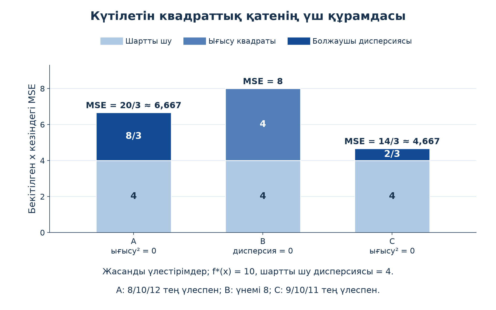
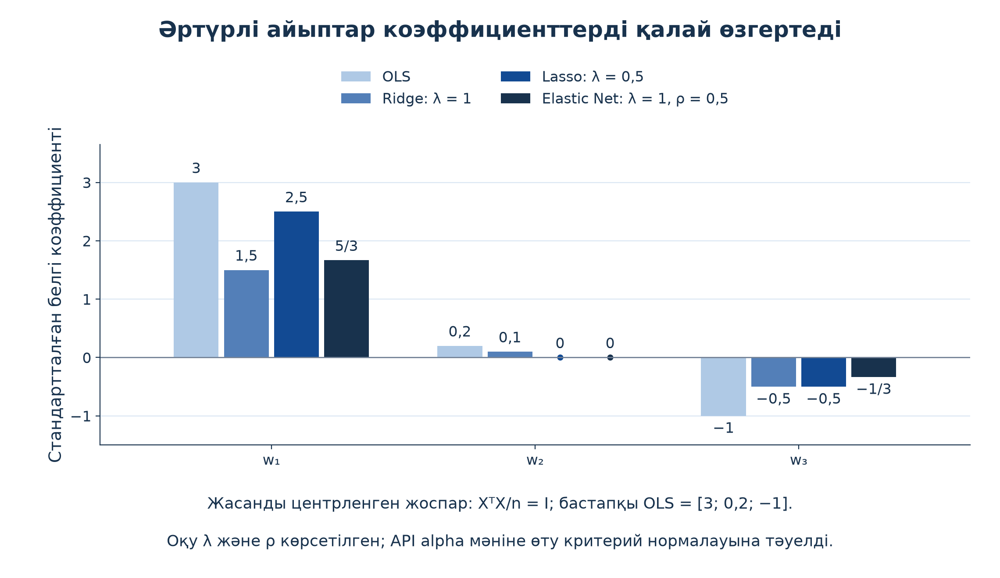
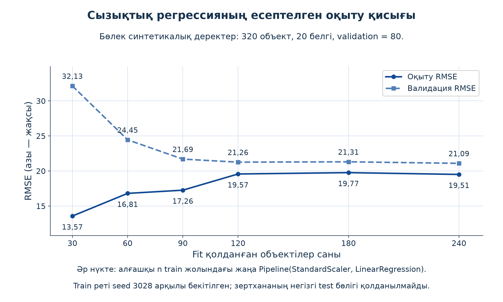
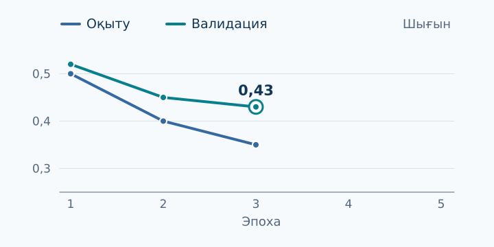
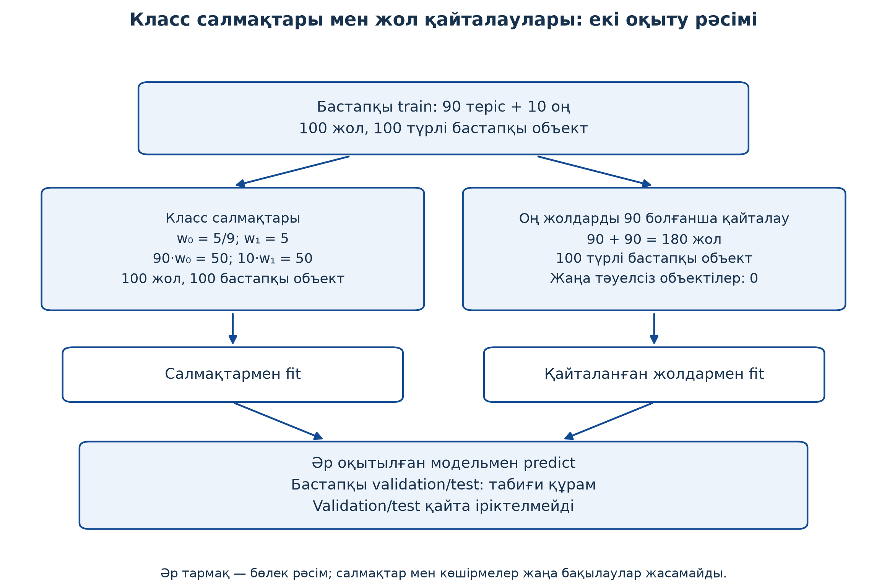
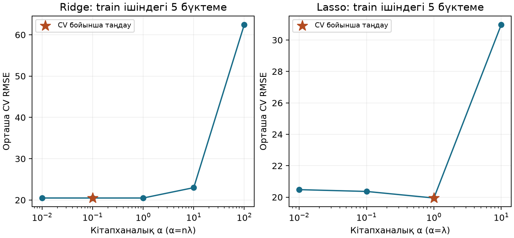
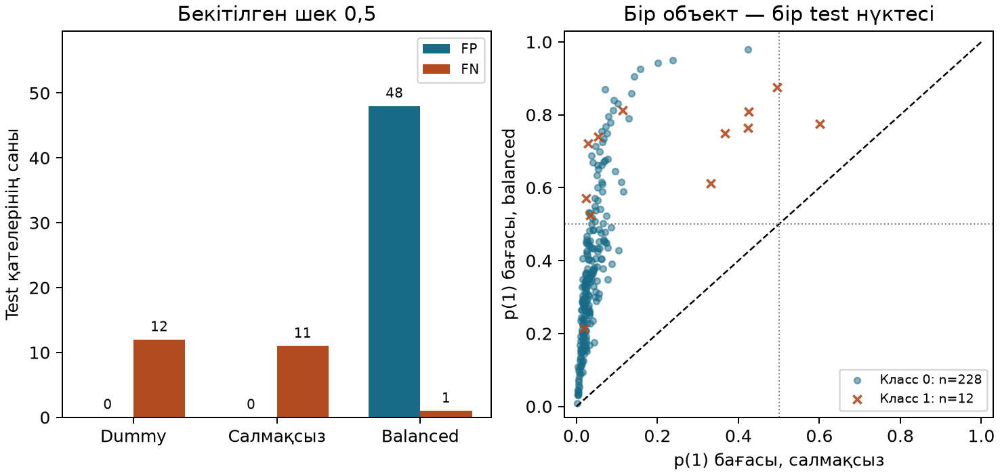

6-тарау. Шамадан тыс үйрену, регуляризация және теңгерімсіз деректермен жұмыс.
6.1 Тақырып бағдаршысы
Оқыту жолдарымен жақсы сәйкестік жаңа объектілердегі пайдалылықты әлі білдірмейді. Икемді модель кездейсоқ бөлшекті сипаттауы, шағын класс жоғары жалпы Accuracy көрсеткішінің тасасында қалуы, ал айыпты күшейту шумен бірге қажетті тәуелділікті де жоюы мүмкін. Бұл жағдайларды басқару үшін әртүрлі әрекеттер қажет: рәсімді диагностикалау, күрделілікті шектеу, деректер құрамын зерттеу және қолданбалы критерийді таңдау. Байқалған мәселені түсінбей, «регуляризацияның» бір параметрін арттыру жеткіліксіз.
Тараудың мақсаты — шамадан тыс үйренуді (overfitting) анықтауды, икемділікті негізді шектеуді және дұрыс хаттамада сирек кластарды зерттеуді үйрену. Тарауды меңгерген студент жеткіліксіз икемділікті модельдің тұрақсыздығынан ажыратады, оқыту қисықтарын оқиды, Ridge, Lasso және Elastic Net әдістерін салыстырады, ағаш шектеулері мен ерте тоқтатуды түсіндіреді, класс салмақтарын есептейді және валидация ішінде train құрамын өзгертуді ұйымдастырады. Жұмыс силлабустың 3.1 индикаторын жалғастырып, 5-тараудың метрикалары мен тексеру сұлбаларын қолданады.
Пререквизиттер: регрессиялық және жіктеу шығындары, негізгі модельдердің гиперпараметрлері, StandardScaler және Pipeline, train/validation/test бөлуі. Сызықтық модельдің матрицалық жазылымы мен туындылар 3-тараудан; C баптауы мен ағаш шектеулері 4-тараудан алынады. Precision, Recall, AP және калибрлеу терминдері бұрын енгізілген мағынада қолданылады. Әртүрлі кітапханалық кластардың сандық баптаулары араласпауы үшін айыптарға қатысты жаңа математикалық келісімдер айқын беріледі.
Негізгі ұғымдар: жеткіліксіз үйрену (underfitting), шамадан тыс үйрену, ығысу (bias), дисперсия (variance), күрделілік, оқыту қисығы (learning curve), регуляризация (regularization), коэффициенттерді кішірейту (shrinkage), сиректік (sparsity), ерте тоқтату (early stopping), теңгерімсіздік, класс салмақтары және жиын құрамын өзгерту. Алдымен күтілетін қате мен бақыланатын диагностика қарастырылады. Одан кейін сызықтық модель айыптары, сызықтық емес алгоритм шектеулері және сирек оқиғаларға арналған рәсімдер енгізіледі. Практика әрбір өзгерісті тексерілетін болжаммен және сақталған тәуелсіз тест жиынымен байланыстыруы тиіс.
6.2 Оқыту қатесінен тұрақты жалпылауға дейін
6.2.1 Жеткіліксіз және шамадан тыс икемділік
Жеткіліксіз үйрену таңдалған рәсім рұқсат етілген оқыту бөлігінде де маңызды тәуелділікті сипаттай алмаған кезде туындайды. Оған тым қарапайым ұсыну, шамадан тыс айып, жарамсыз байланыс функциясы немесе аяқталмаған оңтайландыру себеп болуы мүмкін. Соңғы жағдайды бөлек тексеру қажет: жинақталмаудан туған критерийдің нашар мәні модельдер тобының икемділігі қағидатты түрде жеткіліксіз екенін дәлелдемейді. Белгілер, шкалалар, тоқтату критерийі және іске асырудың есеп қойылымына сәйкестігі тексеріледі.
Шамадан тыс үйрену қолдану жағдайында қайталанбайтын train ерекшеліктерінің болжамға тым күшті әсер етуімен байланысты. Дәрежесі жоғары полином белгілі нүктелерге жақын өтіп, олардың арасында күрт тербелуі мүмкін. Терең ағаш бір шулы класс белгісінің айналасында ереже құра алады. Екі жағдайда да икемділік әртүрлі көрінеді, сондықтан «күрделілік» деген бір сөз барлық модельдер тобына әмбебап сандық шкала бермейді.
Төмен train шығыны мен жоғары validation шығынының алшақтығы зерттеуге негіз болады, бірақ оның өзі себепті анықтамайды. Тексеру деректері басқа кезеңге, топқа немесе белгілер ауқымына қатысты болуы мүмкін; шудың үлестірімі де өзгеше болуы ықтимал. Үлкен алшақтық кезіндегі өте аз train қатесі «қолайсыз» validation объектілерін автоматты түрде жоюға рұқсат бермейді. Алдымен бөлудің мағынасын қалпына келтіріп, есептеу қателері мен деректердің ағып кетуін жоққа шығару қажет.
Оқу салыстыруында деректер мен критерийді сақтап, бір факторды өзгерткен пайдалы. Мысалы, полиномдық ұсынуды бекітіп, айып күшін зерттеуге немесе айыпты сақтап, дәрежелерді салыстыруға болады. Белгілер жиынтығын, seed, алгоритм мен метриканы бір мезгілде ауыстыру нәтижені бір механизммен байланыстыруға мүмкіндік бермейді. Гиперпараметрлерді егжей-тегжейлі іздеу 7-тарауда қарастырылады; мұнда алдымен қандай бақылау болжамды растауы немесе теріске шығаруы керектігін тұжырымдау маңызды.
6.2.2 Квадраттық қатені жіктеу
Тұрақтылықты түсіндіру үшін бекітілген x кірісіндегі регрессияны қарастырайық. Шынайы шартты орташа функция f(x)=E[Y|X=x], ал жаңа жауап Y=f(x)+ε түрінде болсын. Шудың шартты орташа мәні нөлге, дисперсиясы σ²(x) шамасына тең. D оқыту жиыны мен құру рәсімінің кездейсоқтығы f̂D(x) болжамын кездейсоқ шама етеді. Берілген x кезінде жаңа шу оқыту жиынынан және құру кездейсоқтығынан тәуелсіз деп ұйғарамыз.
Рәсімнің орташа болжамын m(x)=E_D[f̂D(x)] арқылы белгілейік. Бұдан әрі E_D және Var_D оқыту жиынын қайталап алу мен құру кездейсоқтығы бойынша бірлескен орташалауды білдіреді; екінші моменттер ақырлы деп ұйғарылады. Жаңа жауап қатесіне m(x) қосып, оны шегерейік. Үш қосылғыш шығады: жаңа шу, орташа модельдің f* шамасынан ауытқуы және нақты оқытылған модельдің өз орташа мәнінен ауытқуы. Квадраттағаннан кейін нөлдік орташа мәндер мен көрсетілген тәуелсіздікке байланысты айқас мүшелердің математикалық күтімі нөл болады. Сондықтан:
Екінші қосылғыш ығысу квадраты, үшіншісі бекітілген сұраудағы рәсім дисперсиясы деп аталады. Мұндағы дисперсия белгінің жолдар бойынша шашырауы емес. Ол оқыту деректерін қайта алып, модельді қайта құрғанда болжамның қаншалықты өзгеретінін сипаттайды. Орташа болжаушының төмен ығысуы жекелеген болжаушылардың жоғары тұрақсыздығымен қатар жүруі мүмкін, ал тұрақты өзгермейтін жауаптың ығысуы үлкен болуы ықтимал.
f*(x)=10 және σ²(x)=4 кезіндегі болжамдардың жасанды үлестірімін қарастырайық. A рәсімі әрқайсысының ықтималдығы 1/3 болатын 8,10 немесе 12 мәндерін береді. Оның орташа мәні 10, ығысу квадраты нөл, дисперсиясы (4+0+4)/3=8/3. Жаңа жауаптың күтілетін қатесі 4+8/3=20/3≈6,666667 болады. Бұл — берілген үш нүктелі үлестірім; 3 бөлімі оның ықтималдықтарына сәйкес қолданылады, ол n−1 түзетуі бар таңдама дисперсиясының бағасы емес.
B рәсімі үнемі 8 береді. Оның дисперсиясы нөл, ығысу квадраты 4, жиынтық қатесі 8. C рәсімі тең ықтималдықтармен 9,10 немесе 11 береді: ығысуы нөл, дисперсиясы 2/3, қатесі 14/3≈4,666667. Демек, егер ығысу бір мезгілде едәуір өссе, өзгергіштікті азайтудың өзі жақсы нәтижеге кепілдік бермейді. Сандар болжамдардың берілген үлестірімдерін көрсетеді, Ridge пен Lasso әдістерін өлшенген салыстыру нәтижесі емес.

Дереккөз: f*(x)=10 және жаңа шу дисперсиясы 4 кезіндегі авторлық есеп; бұл оқытылған модельдер емес, болжамдардың берілген үлестірімі.
6.1-суретте осы үш үлестірім күтілетін қатенің жеке қосылғыштары бойынша салыстырылған. Құрама баған биіктігі олардың қосындысына тең. B тұрақты болжамының дисперсиясы нөл, бірақ ығысу квадраты үлкенірек; C рәсімінде нөлдік ығысу сақталып, өзгергіштік төмендетілген. Мұндай бейне деректердің үлесін рәсім қасиеттерінен ажыратуға көмектеседі.
σ²(x) қосылғышы ағымдағы кірістер жиынтығы кезіндегі жаңа жауап белгісіздігін білдіреді. Сол мәліметтермен сол рәсім коэффициенттерін іріктеу арқылы оны жою мүмкін емес. Дегенмен шын мәнінде қолжетімді ақпаратты белгі қосу жауаптың шартты үлестірімін өзгертуі мүмкін. Сондықтан «жойылмайтын» сөзі бекітілген ақпараттық қойылымға қатысты. Жіктеудің Accuracy көрсеткішіне квадраттық қатенің осы үш мүшелі жіктелуін дәлелдеусіз көшіруге болмайды.
6.2.3 Оқыту қисықтары және тексерілетін диагностика
Оқыту қисығы сапаны қолжетімді train көлемімен салыстырады. Бірнеше өлшем үшін бүкіл рәсімнің жаңа даналары оқытылып, алдын ала белгіленген тексеру деректерінде бағаланады. Белгілерді дайындау тиісті оқыту бөлігі бойынша қайта үйретіледі. Көлденең осьте train өлшемі, тік осьте нақты шығын не метрика көрсетіледі. Жақсару бағыты жазылады: RMSE аз болғаны, AP көп болғаны жақсы.
Train және validation бөліктерінің екеуінде де жоғары шығын жеткіліксіз икемділікке немесе ақпараты аз белгілерге сәйкес келуі мүмкін. Төмен train шығыны мен одан айтарлықтай жоғары validation шығыны тұрақсыздықты көрсетуі ықтимал. Train өскенде алшақтық қысқарып, тексеру шығыны жақсарса, қосымша деректер перспективалы бағыт болып көрінеді. Мұндай пішіндер әрбір ақырлы қисықтың міндетті монотондық заңдары емес, берілген тәжірибенің бақылаулары болып табылады.
Тексеру жиынының өлшемі, құрамының ауытқуы және оңтайландыру кездейсоқтығы тербелістер туғызады. Жекелеген нәтижелерді немесе анықтамасы берілген келісілген шашырау жолағын көрсеткен пайдалы. Тек тәуелді CV бүктемелерінің стандартты ауытқуына сүйеніп, бұл жолақты автоматты түрде сенімділік аралығы деп атауға болмайды. Егер кейінгі нүктелер оқытуда оң объектілердің мүмкін емес санын талап етсе, өлшемдер жоспарының өзін іске қоспай тұрып тексеру керек.
Бақылаулар саны бойынша қисық айып күші, ағаш тереңдігі немесе итерациялар саны бойынша қисықтан өзгеше. Біріншісінде деректер мөлшері, екіншісінде бекітілген деректердегі рәсім қасиеті өзгереді. Оларды бірге зерттеуге болады, бірақ осьтер мен қорытындылар ажыратылуы тиіс. Диагностика нәтижесі нақты жалғастыру қадамы ретінде тұжырымдалады: жаңа рұқсат етілген бақылауларды жинау, ұсынуды өзгерту, икемділікті шектеу немесе үлестірім ауысуын зерттеу. Қорытынды test қабылданған шешімді бағалау үшін сақталады.
6.3 Ridge: коэффициенттерді кішірейту және шешім тұрақтылығы
6.3.1 Оқыту есебінде не өзгереді
3-тараудағы сызықтық регрессия квадраттық шығынды азайтқан. Егер бірнеше белгі бірін-бірі дерлік қайталаса, жекелеген коэффициенттердің елеулі өзгеруі оқыту жолдарындағы болжамды аз ғана өзгертуі мүмкін. Мысалы, екі датчик жақын шамаларды өлшейді: біріншісінің үлкен оң салмағы мен екіншісінің үлкен теріс салмағы ішінара өтеледі. Мұндай өтелу деректердің аздаған өзгерісіне сезімтал болуы мүмкін. Ridge болжамның сызықтық пішінін сақтай отырып, кіші коэффициенттерге басымдық қосады.
X матрицасында n жол және p белгі, y — сандық жауаптар, w — p коэффициент, b — бос мүше болсын. 6.3–6.4-бөлімдерде бір жауап және жеке салмақтары жоқ кәдімгі бақылаулар қарастырылады. Нормалауды бекітейік: қалдықтар квадраттарының қосындысы 2n шамасына бөлінеді. Ridge үшін оған λ көбейткішімен коэффициенттердің евклидтік нормасы квадратының жартысы қосылады:
Норма квадраты координаталар квадраттарының қосындысын білдіреді, ол қосындының квадраты да, вектор ұзындығының өзі де емес. 1/2 көбейткіштері туындыларды жеңілдетеді; баптауды кітапхана интерфейсіне ауыстырғанда олар маңызды болады. b бос мүшесі айыпқа кірмейді. Оның міндеті — жауаптың базалық деңгейін беру. Бұл деңгейді айыптау нәтижені мақсатты шкала нөлін еркін таңдауға осы модельде көзделгеннен басқаша тәуелді етер еді.
Орташа қалдық нөлге тең болғанда b бойынша туынды нөлге айналады. Сондықтан бекітілген w үшін оңтайлы бос мүше орташа y мәнінен белгілердің орташа мәндері мен w скаляр көбейтіндісін шегергенге тең. Алдымен әр бағаннан оның оқыту орташа мәнін шегеріп, y векторын центрлеуге болады. Центрленген деректер үшін оңтайлы бос мүше нөлге тең, ал бастапқы координаталарға оралғаннан кейін көрсетілген теңдікпен қалпына келтіріледі. Бұл — алгебралық түрлендіру, болашақ бақылаулар бойынша орташа мән есептеуге рұқсат емес.
Бағдарламалық рәсімде Pipeline ішіндегі StandardScaler белгілерді центрлеп, масштабтайды, ал регрессиялық модель бос мүшені бағалайды. Бос мүшені бағалайтын Ridge әдісін әдеттегідей пайдалану үшін мақсатты векторды қолмен центрлеу қажет емес. Төмендегі қорытуларда центрленген y түсінікті матрицалық жазылым үшін керек. Масштабталатын белгілерге бірліктер бағаны қосылмайды: әйтпесе бос мүшені қайталап енгізу немесе оны айыпқа қосып жіберу оңай.
6.3.2 Қалыпты теңдеулерден кішірейтуге дейін
Центрленген белгілер матрицасы мен жауаптарды X_c және y_c арқылы белгілейік. Квадраттық шығынның w бойынша туындысы X_cᵀ(X_cw−y_c)/n, айып туындысы λw болады. Қосындыны нөлге теңестіріп, сызықтық теңдеулер жүйесін аламыз. Оң λ кезінде оның шешімі жалғыз:
X_cᵀX_c/n матрицасы теріс емес анықталған. λI_p қосу әр меншікті мәнді λ шамасына арттырып, сызықтық тәуелді бағандар немесе белгілер саны бақылаулар санынан көп болғанда да оларды оң етеді. Бұл берілген есепте коэффициенттер бірмәнсіздігінің жойылуын түсіндіреді. Кері матрица арқылы жазылым қорытуға қызмет етеді; сандық алгоритм әдетте кері матрицаны айқын есептемей, жүйені лайықты жіктеу арқылы шешеді.
Меншікті мәні d>0 бағытта коэффициент ең кіші квадраттар әдісінің шешіміне қатысты d/(d+λ) шамасына көбейтіледі. Кіші d шамасы бар нашар анықталған бағыттар күштірек басылады. Нөлдік бағыттарда деректер жеке әсерді анықтамайды, ал квадраттық айып нөлдік құрамдасты таңдайды. Жалпы жағдайды бастапқы координаталардың бәрін бірдей бөлу емес, дәл осы бағыттардағы кішірейту сипаттайды. Әр коэффициентті 1+λ шамасына жай бөлу X_cᵀX_c/n=I_p арнайы шарты орындалғанда ғана рұқсат етіледі.
Сондықтан бастапқы координаталар жүйесіндегі «Ridge ең кіші квадраттар әдісінің әр коэффициентінің модулін азайтады» тұжырымы тым қатаң: корреляцияланған белгілерде жеке координата басқаша өзгеруі мүмкін. Ең кіші нормалы ең кіші квадраттар шешімімен салыстырғанда шешімнің жалпы евклидтік нормасы азаяды, ал спектрлік құрамдастар сипатталған көбейткіштерге бағынады. Оң λ артқанда коэффициенттер нормасы өспейді. Бұл ретте оқыту қалдықтары квадраттарының қосындысы айып есебінен жақсармайды: модель таңдалған шектеу үшін дәлдігі төменірек сәйкестікке саналы түрде жол береді.
λ шексіздікке ұмтылғанда коэффициенттер нөлге, ал болжам жауаптың оқыту орташа мәніне ұмтылады. λ=0 кезінде бастапқы ең кіші квадраттар есебі шығады; егер оның шешімі жалғыз болмаса, кәдімгі кері матрицалы формула қолданылмайды. Шуға сезімталдықты азайту жалпылауды жақсартуы мүмкін, бірақ шамадан тыс айып пайдалы тәуелділікті жояды. Математикалық жалғыз шешімнің болуы өздігінен болжам сапасының жеткілікті екенін дәлелдемейді.
6.3.3 Масштаб, өлшемділіктер және alpha параметрі
Айып коэффициенттердің шамаларын бағалайды, ал олар белгілердің өлшем бірліктеріне тәуелді. Сағатты минутқа ауыстырғанда осы белгінің сандық коэффициенті 60 есе кемиді, бірақ болжамға үлесі өзгермейді. Оның квадраты 3600 есе кемиді. Шкалалар келісілмесе, бір λ физикалық тұрғыдан бірдей тәуелділікке қатысты әртүрлі басымдық білдіреді. Оқыту бағандарын стандарттау белгінің шамамен бір стандартты ауытқуға өзгеру әсерлерін айыптауға мүмкіндік береді.
Дисперсиясы нөл емес толық баған үшін StandardScaler дисперсияны есептегенде n бөлімін қолданады; стандартталған бағанның оқыту жолдарындағы орташа квадраты 1 болады. Бұл әртүрлі бағандарды ортогонал етпейді және корреляцияларын жоймайды. Орташа мәндер мен масштабтар тек train бойынша есте сақталады; validation және тәуелсіз қорытынды деректер сол мәндермен түрлендіріледі. CV кезінде масштабтау әр оқыту бөлігінің ішінде қайта үйретіледі. Бұл қасиеттер мен ddof=0 келісімі StandardScaler құжаттамасында көрсетілген.
Өлшемділіктер айыптардың әмбебап сандық торы неліктен жоқ екенін де түсіндіреді. Стандартталған кірістер өлшемсіз болса, коэффициенттердің өлшем бірлігі жауаптың бірлігімен бірдей. Онда квадраттық шығын мен квадраттық айыптың өлшемділігі бірдей, ал Ridge λ өлшемсіз болады. Lasso үшін модульдер қосындысының көбейткіші жауаптың өлшем бірлігіне ие. y шкаласы өзгергенде тиісті баптауды қайта қарау керек. Төмендегі аралас айыпта сандық келісім таңдалған шкалаларға қатысты; ρ олардың ықпалының әмбебап физикалық арақатынасын емес, қосылғыштар қоспасын береді.
Егер физикалық бірліктерді дәл келістіру талап етілсе, модульдер қосындысы мен норма квадратының бөлек өлшемді көбейткіштері болуы тиіс. λ және ρ арқылы ұсыну шкалалар таңдалғаннан кейін олардың сандық мәндерін параметрлеу болып табылады. Сондықтан ρ=0,5 екі айыптың нақты үлесі бірдей дегенді білдірмейді: нормалардың өзі едәуір ерекшеленуі мүмкін. Жауап бірліктері өзгергенде аралас айыптың бұрынғы ρ мәнін сақтау да сиректік пен квадраттық кішірейту арасындағы басымдықты өзгертуі ықтимал. Салыстыру үшін шкалаларды сақтау немесе екі көбейткішті де айқын қайта есептеу қажет.
Оқытудан кейін стандартталған белгілер коэффициенттерін бастапқы бірліктерге қайтаруға болады. Бастапқы баған коэффициенті оның стандартталған коэффициентін оқыту стандартты ауытқуына бөлгенге тең. Бос мүшеден осы қалпына келтірілген коэффициенттер мен оқыту орташа мәндері көбейтінділерінің қосындысы қосымша шегеріледі. Мұндай дәл түрлендіруде болжамдар сақталады. Бірақ қалпына келтірілген коэффициенттер модульдерін әмбебап маңыздылық ретінде салыстыруға болмайды: олар қайтадан әртүрлі бірліктерде өрнектелген. Тұрақты бағанның дербес әсері бос мүшеден ажыратылмайды; оның болуы қосымша пайдалы өзгергіштік тудырмайды.
Scikit-learn 1.9.1 ішіндегі Ridge класы қалдықтар квадраттарының қосындысы мен норма квадратының alpha шамасына көбейтіндісін азайтады. Бұл мақсатты (6.2) формуласынан алу үшін бүкіл формуланы 2n шамасына көбейтеміз. Квадраттар қосындысы мен норма квадратының nλ шамасына көбейтіндісі шығады. Ортақ оң санға көбейту минимумды өзгертпейді, сондықтан Ridge alpha=nλ. Мысалы, n=100 және оқу λ=0,2 үшін 0,2 емес, alpha=20 қажет. Нормалау Ridge бастапқы дереккөз беті бойынша тексерілген.
Мұнда n — бүкіл бастапқы кестенің емес, нақты оқытудың жолдар саны. Кітапханалық alpha бірдей, ал оқыту бөліктерінің өлшемдері әртүрлі болса, оқу λ шамасы alpha/n болады. CV бойынша баптау бүкіл рәсім параметрі ретінде тікелей alpha таңдай алады; бұл ретте ненің бекітілетінін дұрыс сипаттау керек. Егер тәжірибе әртүрлі n кезінде бірдей оқу λ шамасын талап етсе, alpha әр өлшем үшін қайта есептеледі. Әртүрлі бағалауыштардың alpha мәндерін тек атауы бірдей болғандықтан механикалық салыстыруға болмайды.
6.4 Lasso және Elastic Net: сиректік және айыптарды біріктіру
6.4.1 Модульдер қосындысы неге нөлдер тудырады
Lasso квадраттық шығынның сол орташа жартысын сақтайды, бірақ коэффициенттер модульдерінің қосындысын айыптайды. Квадраттық функциядан өзгеше, модульдің нөлде сынығы бар. Осы айырмашылық жекелеген координаталарды дәл алып тастау мүмкіндігін анықтайды:
Бос мүше қайтадан айыпталмайды. Центрленген ортонормаланған бағандарды, яғни X_cᵀX_c/n=I_p шартын қарастырайық. z=X_cᵀy_c/n ең кіші квадраттар әдісінің шешімі болсын. Квадратты ашқаннан кейін есеп тәуелсіз координаталық есептерге бөлінеді: w_j−z_j айырмасы квадратының жартысы мен λ|w_j| қосындысы, оған минимумға әсер етпейтін тұрақты шама қосылады. Осылай шекті тек геометриялық суретке сүйенбей қорытуға болады.
w_j>0 болса, туынды w_j−z_j+λ болады. w_j=z_j−λ үміткері тек z_j>λ кезінде оң. w_j<0 болса, туынды w_j−z_j−λ, сондықтан z_j+λ теріс үміткері z_j<−λ кезінде рұқсат етіледі. Нөлде модульдің кәдімгі туындысы жоқ, бірақ оның субградиенті −1 мен 1 аралығын қамтиды. z_j шамасы −λ мен λ арасында, шеттерін қоса алғанда, оңтайлылық шарты нөлде орындалады.
S_τ(z)=sign(z)max(|z|−τ,0) операциясы жұмсақ шектеу (soft thresholding) деп аталады. Қарастырылған Lasso үшін коэффициент S_λ(z_j) болады. Үлкен координатаның модулі λ шамасына кемиді, кішісі нөлге айналады. Бұл үлкен координатаны өзгертпей қалдырып, кішісін алып тастайтын қатаң шектеуден өзгеше. Айып шамасы қалған белгілер құрамына да, олардың әсерлерінің бағаларына да ықпал етеді. Lasso нөл емес коэффициенттері де ең кіші квадраттар әдісіне қатысты ығысқан.
Корреляцияланған бағандарда ең кіші квадраттар әдісінің бастапқы векторына жұмсақ шектеуді бір рет қолданып, есеп шешілді деуге болмайды. Бір координатаны жаңарту қалғандарын ескергеннен кейінгі қалдыққа тәуелді. Мысалы, координаталық түсу жинақталу критерийі орындалғанша осындай шартты есептерді кезекпен қайта есептейді. Сызықтық тәуелділікте Lasso оңтайлы коэффициенттердің бірнеше векторына ие болуы мүмкін. Квадраттық шығын үшін олардың оқыту жолдарындағы болжамдары сәйкес келеді, бірақ нөл емес координаталар жиынтығы өзгеше болуы мүмкін.
Сиректік сақтауды жеңілдетіп, модельді талқылауды оңайлатуы мүмкін. Алайда нөлдік коэффициент нақты ұсынуда нақты айып кезіндегі белгінің алып тасталуын білдіреді. Ол белгіде жалпы ақпарат жоқ екенін дәлелдемейді. Байланыс сызықтық емес болуы, басқа координатамен қайталануы немесе қолдағы жолдарда нашар ажыратылуы мүмкін. Сол сияқты нөл емес салмақ себептік әсерді дәлелдемейді. Таңдалған жиынтықтың тұрақтылығы болжам қатесін бағалаудан бөлек, рұқсат етілген қайта оқытуларда зерттеледі.
6.4.2 Elastic Net не қосады
Elastic Net модульдер қосындысы мен норма квадратының жартысын біріктіреді. Бір ортақ λ күшін сақтап, нөл мен бір арасындағы ρ үлесін енгіземіз:
ρ=1 кезінде мақсат Lasso әдісімен, ρ=0 кезінде қабылданған математикалық келісімдегі Ridge әдісімен сәйкес келеді. Аралық мәнде сынық сақталатындықтан, дәл нөлдер болуы мүмкін, ал квадраттық бөлік қалған коэффициенттерді қосымша шектейді. λ>0 және ρ<1 болса, оң квадраттық айып w бойынша қатаң дөңестікті және тәуелді бағандарда да жалғыз коэффициенттер векторын қамтамасыз етеді. Бұл тұжырым қосымша шектеулері жоқ берілген квадраттық есепке қатысты.
Күшті байланысқан белгілер үшін Lasso бір өкілді таңдауы мүмкін, әрі жолдардың аздаған өзгерісі осы таңдауды өзгерте алады. Elastic Net квадраттық құрамдасы ұқсас белгілердің бірге сақталу ықтималдығын арттырады. Дәл бірдей екі баған үшін екі коэффициентті олардың орташа мәнімен ауыстыру болжамды сақтап, модульдер қосындысын арттырмайды, ал коэффициенттер тең болмаса, квадраттар қосындысын азайтады. Сондықтан оң квадраттық құрамдас кезінде мұндай бағандардың оңтайлы коэффициенттері тең. Тек шамамен ұқсас бағандар үшін бұл міндетті теңдік емес, үрдіс болады. Мұндай мінез-құлық сызықтық модельдер нұсқаулығында талқыланады.
Жалпы координаталық қорытуды бір x_j бағаны үшін жазу ыңғайлы. r_j қалдығы бос мүшені және барлық қалған бағандар үлестерін шегергеннен кейін алынады; j бағанының өз үлесі әзірше шегерілмейді. a_j=x_jᵀx_j/n және z_j=x_jᵀr_j/n деп алайық. Сонда координата бойынша шартты есеп мына нәтижені береді:
Нөл емес баған үшін a_j>0. Жалпы жағдайда бұл толық шешімнің бір мезгілдік формуласы емес, қалған коэффициенттердің ағымдағы мәндеріндегі бір координаталық жаңарту. Алым субградиенттің сол үш жағдайынан шығады, ал бөлім шығын мен квадраттық айыптың қисықтықтарын қосады. Ортонормаланған мысалда a_j=1, z_j қалған координаталарға тәуелсіз, сондықтан (6.6) бірден дәл жауап береді. ρ=1 кезінде Lasso жұмсақ шектеуі шығады; ρ=0 кезінде шектеу жоғалып, квадраттық кішірейту қалады.
6.4.3 Үш мақсатқа арналған бір мысал
X_cᵀX_c/n=I_3 шарты және ең кіші квадраттар әдісінің z=(3; 0,2; −1) шешімі бар центрленген деректерді алайық. Бұл мысалда n=4 және y_c=X_cz деп бекітеміз, яғни жауап центрленген жоспардың үш бағанының кеңістігінде жатады. Төмендегі барлық сандар осы жасанды алгебралық құрылымға қатысты. Олар нақты есептегі сапаны өлшенген салыстыру нәтижесі емес. Айып баптаулары есептеулерді көрсету үшін беріліп, арнайы бөлек көрсетілген.
Ridge үшін λ=1 кезінде әр координатаны 2 шамасына бөлеміз: (1,5; 0,1; −0,5) аламыз. Кіші екінші координата азаяды, бірақ нөл емес болып қалады. Lasso үшін λ=0,5 кезінде бірінші және үшінші координаталардың модулін 0,5 шамасына кемітеміз; 0,2≤0,5 болғандықтан, екіншісін алып тастаймыз. Жауап (2,5; 0; −0,5) болады. Elastic Net үшін λ=1 және ρ=0,5 кезінде шек те 0,5 болады, бірақ қалған шамалар қосымша 1,5 шамасына бөлінеді. Жауап (5/3; 0; −1/3) болады.
Кесте 6.1. Бір ортонормаланған оқу жоспарының дәл шешімдері
| Әдіс | Оқу баптауы | n=4 кезіндегі scikit-learn параметрлері | Коэффициенттер векторы |
|---|---|---|---|
| Ridge | λ=1 | alpha=4 | (1,5; 0,1; −0,5) |
| Lasso | λ=0,5 | alpha=0,5 | (2,5; 0; −0,5) |
| Elastic Net | λ=1; ρ=0,5 | alpha=1; l1_ratio=0,5 | (5/3; 0; −1/3) |
Екінші координатаны тексеру әсіресе көрнекі. Ridge айыбының нөлдегі туындысы нөлге тең, сондықтан нөл емес 0,2 сигналы шағын салмақты сақтайды. Lasso және Elastic Net әдістерінде модуль субградиенті бұл сигналды нөлдік салмақтың өзінде теңестіре алады. Бірінші координатаның әртүрлі жауаптарын әдістер рейтингі ретінде түсіндіруге болмайды: әртүрлі мақсаттар салыстырылады, ал Lasso қосымша басқа λ қолданады. Мұнда кішірейтуден кейінгі оң оқыту шығыны шусыз да күтіледі, себебі бастапқы жауапты ең кіші квадраттар әдісі дәл береді.

Дереккөз: берілген оқу λ мәндеріндегі авторлық дәл есептеулер; λ мәндері автоматты түрде бірдей API alpha мәндері емес.
6.2-суретте дәл 6.1-кестенің векторлары салыстырылады. Ridge кіші екінші координатаны сақтайды, Lasso және Elastic Net оны нөл етеді. Қалған бағандардың әртүрлі масштабтары сыртқы деректерде өлшенген дәлдікті емес, көрсетілген мақсаттар мен баптауларды бейнелейді.
6.4.4 Баптауларды түрлендіру және ішкі тексеру бойынша таңдау
Lasso кітапханалық мақсаты квадраттар қосындысын 2n шамасына бөлуді және модульдер қосындысының алдындағы alpha көбейткішін қамтиды. Демек, Lasso alpha=λ. ElasticNet үшін сол нормалауда alpha=λ, l1_ratio=ρ; квадраттық бөліктің 1/2 көбейткіші (6.5) формуласымен сәйкес. Бұл Lasso және ElasticNet бастапқы дереккөз беттерінен тексеріледі. ρ=0 математикалық шегін параметр атаулары бірдей болса, нормалауы да бірдей деп санағаннан гөрі, alpha мәнін тиісті қайта есептеп, Ridge бағалауышымен іске асырған ыңғайлы.
Айып күші қолжетімді оқыту деректеріндегі алдын ала белгіленген CV метрикасы бойынша таңдалады. Elastic Net үшін λ және ρ жұптары зерттеледі; тек ρ өзгерту айыптың екі құрамдасын бір мезгілде қайта бөледі. Оң күштердің орынды бастапқы торы бірнеше шама ретін қамтып, кейін ішкі тексеру арқылы нақтылануы мүмкін. Нақты шекаралар жауап масштабына, белгілер саны мен ұсынуына тәуелді. Егер ең жақсы нәтиже тордың шетінде болса, бұл қорытынды жиынға қарауға емес, сол рұқсат етілген хаттама ішінде ауқымды қайта қарауға негіз болады.
Тексеру бөлігінде әдетте оқыту айыбын қоспай, мысалы орташа квадраттық қате сияқты болжам шығыны салыстырылады. Әйтпесе екі баптау әртүрлі мақсаттар бойынша бағаланып, сандық айып қосылғышының азаюын болжамның жақсаруы деп қате қабылдауға болар еді. Регуляризацияланған оқыту мақсатының мәні бір таңдалған есепті оңтайландыру сұрағына жауап береді. Тексеру қатесінің мәні оның басқа жолдарға тасымалдануы туралы сұраққа жауап береді. Бұл шамалар әртүрлі бағытта өзгеруі мүмкін, бұл қарама-қайшылық емес.
Бөлу сұлбасы қолдану жағдайларына сәйкес келуі тиіс. Бір жабдықтың байланысқан өлшеулері бір топта сақталады, ал болашақты болжауда уақыт реті ескеріледі. Pipeline ішіне дұрыс орналастырылған айып та бақылаулардың жарамсыз бөлінуін түземейді. Бірнеше күшті салыстырғанда айырмашылықтар рәсім өзгерісін көрсетуі үшін келісілген бөлулер мен бір анықталған метрика қолданылады. Бүктемелер арасындағы нәтижелер шашырауы қорытындының сезімталдығын бағалауға көмектеседі, бірақ тәуелді бүктемелерді автоматты түрде тәжірибенің тәуелсіз қайталаулары деп санауға болмайды.
Әр үміткер бүкіл Pipeline нысанын қамтиды: орташа мәндер мен масштабтарды бағалау, бағандарды түрлендіру және регрессияны оқыту. CV алдында бүкіл кестені масштабтау тексеру бөліктерінің ақпаратын оқыту рәсіміне береді. StandardScaler нысанын Pipeline ішінде модельдің алдына орналастыру кәдімгі гиперпараметр іздеуіне әр бүктемеде дайындауды қайта үйретуге мүмкіндік береді. Осы қолжетімділік шекарасы деректердің ағып кетуі туралы бөлімде негізделген. Алдын ала бір рет үйретілген дайындаудан кейін тек регрессияның ішкі CV бағалауышы тұрса, ол мұндай шекараны автоматты түрде қамтамасыз етпейді.
Таңдаудан кейін шкалалар, дайындау тәсілі, айып күші және тоқтату критерийі бекітіледі; қорытынды модель рұқсат етілген көлемде оқытылып, тәуелсіз бағаланады. Бүктемелерден толық оқытуға өткенде Ridge alpha мәнін қайта есептеу оқу λ шамасының немесе тікелей кітапханалық alpha шамасының бекітілгеніне тәуелді. Есепте бұл келісім, пайдаланылған өлшемдер және іске асыру нұсқасы сақталады. Итерациялық Lasso және Elastic Net үшін жинақталу тексеріледі: аяқталмаған оңтайландыру айыптарды салыстыру мен нөл емес коэффициенттер санын бұрмалауы мүмкін.
Болжам қатесі, ықшамдылық және белгілер жиынтығының тұрақтылығы бөлек қарастырылады. Таңдалған бағандар құрамы өзгеріп тұрғанда орташа CV метрикаларының шағын айырмасы олардың маңыздылығын дәл мазмұндық ранжирлеуге негіз болмайды. Қолдану үшін өлшеулердің қолжетімділігі мен сақтау құны маңызды болса, бұл талаптар алдын ала беріліп, таңдауда ескеріледі. Регуляризация деректердің белгілі ұсынуы ішіндегі басымдықты білдіреді; оның пайдасы бүкіл рәсімді тексеру арқылы анықталады, ал коэффициенттердің мағынасы бақылаулық сызықтық модельдің шектеулерін сақтайды.
Белгілер саны да нәтиже мағынасына әсер етеді. Белгілер көп кезде нөл емес салмақтардың аз болуы факторлардың жалғыз шынайы жиынтығы қалпына келтірілгенін әлі растамайды. Көптеген ұқсас түсіндірмелердің арасынан рәсім өз айыбына лайықтысын таңдайды. Бақылаулар саны аз болса, бұл таңдаудың тұрақтылығын тексеру әсіресе қажет. Lasso қолданғаннан кейін тек қалған бағандарда кәдімгі ең кіші квадраттар әдісін қайта оқытса, ығысуы мен шашырауы басқа жаңа рәсім шығады; оны бөлек ішкі бағалаусыз бұрынғы Lasso шешімі ретінде көрсетуге болмайды.
Бөлімдердің әдістемелік негізі — авторлық 6-дәрістің 8–12-слайдтары және №6 зертханалық жұмыстың 3-бөлімі (S06, S12). Формулалардағы нормалаушы жарты көбейткіштер осы тараудың бірыңғай келісімі үшін айқын нақтыланған; сандық мысал мен координаталық шектің қорытылуы бөлек әзірленген. Scikit-learn 1.9.1 бастапқы құжаттамасы 2026 жылғы 4 қарашада тексерілген.
6.5 Сызықтық емес модельдерді шектеу және ерте тоқтату
6.5.1 Модель икемділігі қайда орналасқан
Коэффициенттердің квадраттық айыбы — тұрақтырақ шешімге басымдық білдірудің бір тәсілі. Басқа модельдер топтарында параметрлер басқаша құрылған. Ағаш үшін тереңдік, жапырақтың рұқсат етілген өлшемі, соңғы аймақтар саны және әрі қарай бөлу критерийі маңызды. Көршілер әдісінде k саны жергілікті орташалау өлшемін анықтайды. RBF-SVM әдісінде ұқсастық масштабы мен бұзушылықтардың салыстырмалы бағасын gamma және C береді. Механизмдерді барлық модель күрделілігін бірдей өлшейтін жалғыз санға келтіруге болмайды.
Ағаштағы max_depth жол ұзындығын шектейді, min_samples_leaf тым шағын соңғы топтарға тыйым салады. Жапырақ өлшемінің оң шектеуі, шулы бір белгіні бөліп көрсету оқыту біртексіздігін жақсартса да, оны оқшаулауға жол бермеуі мүмкін. Ағаш өскеннен кейін кесу, мысалы cost-complexity pruning, сәйкестік пен құрылым өлшемі арасындағы ымыраны бағалайды. Өсуді алдын ала шектеу мен кейінгі кесу әртүрлі рәсімдерді береді; оларды бір операцияның бірдей атаулары деп санамай, бір рұқсат етілген хаттамада салыстыру керек.
Кездейсоқ орманда ағаштар санын арттыру ең алдымен орташалауды тұрақтандырады. Бұл әр ағаштың тереңдігін шектеуге немесе ең кіші жапырағын үлкейтуге тең емес. Өте ұқсас ағаштардың көп болуы шексіз тәуелсіз айғақ тудырмайды. 4-тарауда орташа мән дисперсиясы корреляция туралы айқын ұйғарымдарда талданған. Енді бұл «тұрақты қосынды үшін ағаштар жеткілікті ме?» сұрағын «әр ағаш қандай ережелерге жол береді?» сұрағынан ажыратуға көмектеседі.
k-NN әдісінде k арттыру орташалауды кеңейтеді. k тым аз болса, бір қате класс белгісі жергілікті жауапты күрт өзгертуі мүмкін; k өте үлкен болса, шағын мазмұнды аймақтар жоғалады. SVM әдісінде C азайту кіші норманың салыстырмалы рөлін күшейтеді, ал gamma RBF геометриясын өзгертеді. Екі жағдайда да белгілер масштабы баптау мағынасына кіреді. Сондықтан сандық параметрді тексермей басқа деректер дайындауына көшіру модель атауы бұрынғыдай болғанның өзінде рәсімді өзгертеді.
Нейрондық желілер үшін салмақ шектеулері, оқытуды тоқтату, dropout және басқа тәсілдер қолданылады. Dropout оқыту кезінде белсенулердің бір бөлігін берілген ереже бойынша кездейсоқ өшіреді, ал қолдану режимі тиісті детерминдік масштабтауды пайдаланады. Оны бір белгілерді біржола жою немесе жаңа тәуелсіз өлшеулердің көзі ретінде түсіндіруге болмайды. Толық нейрондық желі қойылымы 13-тарауда енгізіледі; мұнда икемділікті бақылаудың жалпы мағынасын және оқыту мен қолдану режимдерінің айырмасын түсіну жеткілікті.
Рәсім сапасы деректер көлемі бойынша да зерттеледі. 6.3-суретте бөлек жасанды сызықтық есептің есептелген қисығы көрсетілген: 320 жол, 20 белгі, бесеуі ақпаратты, қосылған шудың стандартты ауытқуы 20. 240 train жолының реті бекітілген; әрбір 30,60,90,120,180,240 өлшемінде StandardScaler мен кәдімгі сызықтық регрессия қайта оқытылады. Диагностикаға бірдей 80 validation жолы пайдаланылады. Бұл негізгі зертхананың test бөлігі емес, генераторы 3026 болатын бөлек жиынтық. Оның CSV файлы ID, split және train ретін сақтайды.

Дереккөз: 320 жасанды жол, train 240 және validation 80, генератор 3026; әр өлшемге жаңа Pipeline, зертхананың негізгі test бөлігі қолданылмайды.
Осы қисықта validation-RMSE 30 жол кезіндегі 32,127989 шамасынан 240 жол кезіндегі 21,091499 шамасына өзгереді. 120 мен 180 жол арасында ол сәл өседі: 21,259337 шамасынан 21,308600 шамасына дейін. Тербеліс сақталған, себебі ақырлы тәжірибелік қисық қатаң монотонды болуға міндетті емес. График бақылаулар санына тәуелділікті көрсетеді. Ерте тоқтатуда әрі қарай басқа фактор — бекітілген оқыту бөлігіндегі оқыту қадамдарының саны өзгереді.
6.5.2 Ерте тоқтату — күйді таңдау тәсілі
Ерте тоқтату кезінде модель күйін таңдау
Оқыту және валидация шығындарының бес эпохада қалай өзгеретінін салыстырыңыз. Ең аз шығын жақсы нәтижеге сәйкес келеді.

Алғашқы үш эпохада екі шығын да азаяды. Үшінші эпохада валидация шығыны 0,43-ке жетеді. Осы күй сақталады.
Барлық қадамның мәтіні
- Ең аз шығынды табу — Алғашқы үш эпохада екі шығын да азаяды. Үшінші эпохада валидация шығыны 0,43-ке жетеді. Осы күй сақталады.
- Бірінші нашарлау — Төртінші эпохада оқыту шығыны 0,31-ге дейін төмендейді, ал валидация шығыны 0,44-ке өседі. Жақсармаған тексерулер саны — бір.
- Тоқтау шарты — Бесінші эпохада валидация шығыны 0,46 болады. Екі тексеру қатарынан жақсармағандықтан, patience=2 ережесі бойынша оқыту тоқтайды.
- Сақталған күйді қайтару — Осы ереже үшін үшінші эпохада сақталған күй қайтарылады. Қорытынды сапа кейін бөлек тест жиынында өлшенеді.
Итерациялық алгоритм модель күйлерінің тізбегін жасайды. Архитектура тұрақты болғанда да кейінгі қадам оқыту ерекшеліктеріне күштірек бейімделуі мүмкін. Early stopping алдын ала белгіленген критериймен тоқтату сәтін таңдайды. Бұл әрекет train шығыны бойынша сандық жинақталуды тексеруден өзгеше: validation сапасы нашарлап жатқанда оңтайландыру өз мақсатын әлі жақсарта беруі мүмкін.
Түсінікті оқу хаттамасында тексеру шығыны, оны есептеу жиілігі, ең аз жақсару және patience төзімі — жеткілікті жақсарусыз бірізді тексерулер саны алдын ала беріледі. Ең жақсы рұқсат етілген күй сақталып, тоқтағаннан кейін нақты қай күй қайтарылатыны белгілі болады. Жекелеген іске асырулардың өз сақтау ережелері болуы мүмкін, сондықтан бұл қасиет early_stopping деген жалғыз сөзге сүйеніп болжанбай, интерфейс бойынша тексеріледі.
Есептеу мысалы 6.1. Тоқтату сәті және таңдалған эпоха
Бес бірізді эпохада train шығындары [0,50;0,40;0,35;0,31;0,29], ал validation шығындары [0,52;0,45;0,43;0,44;0,46] болсын. Шығынның азы жақсы. Ереже қатаң азаюды жақсару деп санайды, ең аз қосымша шама нөлге тең, patience=2. Үшінші эпохадан кейінгі ең жақсы күйдің validation шығыны 0,43. Төртінші тексеру бір сәтсіздік, бесіншісі екіншісін береді, сондықтан үдеріс бесінші тексеруден кейін тоқтатылады. Мұнда қабылданған хаттамада автоматты түрде бесінші емес, үшінші эпоханың сақталған күйі қайтарылады.
Азайып жатқан train шығыны бұл шешімді өзгертпейді: күйді таңдау критерийі validation бойынша алдын ала анықталған. Бірақ 0,43 саны таңдалған рәсімнің тәуелсіз бағасы емес, себебі дәл осы бес нәтиже таңдауға қатысқан. Күйді бекіткеннен кейін, 5-тараудағы шек таңдаудағыдай, сыртқы test қажет. Test нәтижесін көргеннен кейін оқытуды қайта-қайта жалғастырып, ыңғайлы сәтте тоқтату оны тағы бір development жиынына айналдырар еді.
Тоқтатуға арналған тексеру бөлігі қолдану құрылымына сәйкес келуі тиіс. Ішкі жолдарды кездейсоқ бөлу уақыт қатарларына немесе бір аспаптың қайталама өлшеулеріне міндетті түрде жарай бермейді. Таңдалған іске асыру талап етілген сұлбаны қолдамаса, оқыту жоспары рұқсат етілген шекараларды сақтап, басқаша ұйымдастырылады. Эпохалар саны, patience және критерийдің өзі де баптаулар; оларды бір validation бойынша жаппай іріктеу әдеттегі іріктеу әсерін туғызады.
Ерте тоқтату мен айыптар бірге қолданылуы мүмкін. Нақты эпохалар саны оқыту жылдамдығына, бастапқы инициализацияға және оңтайландыру әдісіне тәуелсіз үнемі бір λ шамасына сәйкес келеді деуге болмайды. Сызықтық есептер үшін арнайы байланыстар бар, бірақ кез келген L2 айыбын еркін тоқтатумен әмбебап алмастыру анықтаманың өзінен шықпайды. Зерттеуші дайындауды, оңтайландыру параметрлерін және күйді таңдау тәсілін қоса, бүкіл рәсімді бекітеді.
6.6 Класс теңгерімсіздігі: мақсат, салмақтар және оқыту құрамы
6.6.1 Оқиғаның сиректігі және тексеру критерийі
Теңгерімсіздік класс жиіліктерінің айырмасын білдіреді, бірақ өздігінен деректердегі қатені анықтамайды. Сирек оқиға қолданбаның табиғи бөлігі болуы мүмкін. Оны қорытынды тексеруде жасанды көбейту сұрақты өзгертеді: нақты ағында жүйе көптеген теріс объектілерді кездестіруін жалғастырады. Сондықтан алдымен қажетті әрекет, FP және FN бағасы, қолжетімді тексеру көлемі мен тасымалдау шарттары анықталады. Содан кейін ғана оқыту мақсатын немесе train құрамын өзгерту қажеттігі таңдалады.
90 теріс және он оң объектіде көпшілік ережесінің Accuracy=0,9 болады, бірақ ол 1-кластың барлық оқиғасын өткізіп жібереді. Бұл Accuracy математикалық тұрғыдан қате дегенді білдірмейді; ол дұрыс белгілер үлесін дәл сипаттайды. Мәселе онымен сирек оқиғаны анықтау мақсаты алмастырылғанда туындайды. Матрицамен бірге тиісті кластың Recall, Precision, F1, AP, ROC AUC көрсеткіштері және берілген құн пайдалы. Олардың мағынасы мен оқиға таралуына тәуелділігі 5-тарауда талданған.
Оң бақылаулардың аз саны тексеру тұрақтылығының мәселесін де тудырады. Test бөлігінде бес оң объект болса, бір шешімнің өзгеруі Recall көрсеткішін бірден 0,2 шамасына өзгертеді. Стратификация кластар өкілдігін сақтауға көмектеседі, бірақ қосымша тәуелсіз оқиғалар жасамайды. Топ не уақыт кездейсоқ құрамнан маңызды болса, әр бүктемеде бірдей оң үлес алу үшін ғана бұл құрылымды бұзуға болмайды. Метриканы есептеу мүмкіндігі мен деректер жеткіліктілігі алдын ала тексеріледі.
6.6.2 Бақылаулар үлесін өзгерту
Класс салмақтары оқыту кезіндегі қателердің салыстырмалы үлесін өзгертеді. Бастапқы салмақсыз бақылаулар үшін кең тараған balanced ережесі n оқыту жолының санын, көрсетілген K класты және әр кластың n_c санын қолданады:
Бұл ереже берілген оқыту бөлігінде кластардың жиынтық салмағын теңестіреді. Ол жолдар санының бірдей болуын талап етпейді, белгілерді бірдей ақпаратты етпейді және қателердің қолданбалы бағасын автоматты анықтамайды. Класқа 5 салмағы берілсе, бұл оқиғаның ақша бірліктеріндегі дәлелденген құны емес, таңдалған оқыту есебінің салыстырмалы коэффициенті. Пәндік бағаларды бөлек беруге болады; олардың таңдауы негізді болуы тиіс.
Есептеу мысалы 6.2. Жаңа жолдарсыз салмақтар
Train бөлігінде 90 теріс және он оң бақылау бар. w₀=100/(2·90)=5/9 және w₁=100/(2·10)=5 аламыз. Жиынтық салмақтар 90·5/9=50 және 10·5=50 болады. Физикалық тұрғыдан жүз жол және сол жүз бастапқы бақылау қалады. Модель олардың үлесін бағалайтын критерий өзгерді. Бұл сандар дәл train бөлігіне қатысты; ішкі бүктемеде теңгерім оның оқыту бөлігі бойынша қайта есептеледі.
Салмақталған логистикалық модельдің ықтималдық шығысын тексерусіз бастапқы ағындағы ықтималдық деп санауға болмайды. Қарапайым мысал — тек бос мүшесі бар модель. Кәдімгі бинарлық log-loss кезінде оның оңтайлы тұрақты ықтималдығы оқытудағы оқиға үлесіне, мұнда 0,1 шамасына тең. Көрсетілген balanced салмақтарынан кейін оңтайлы мән 50/(50+50)=0,5 болады. Демек, салмақтарды өзгерту жаңа белгі қоспай-ақ немесе ранжирлеуді өзгертпей-ақ ықтималдық деңгейінің өзін өзгерте алады.
Идеал шартты үлестірім және тұрақты оң класс салмақтары үшін салмақталған log-loss минимумы q(x)=w₁p(x)/[w₁p(x)+w₀(1−p(x))] түрінде болады, мұндағы p бастапқы жиынтыққа қатысты. Бұл мақсаттың ығысуын түсіндіреді; теңдік кез келген ақырлы регуляризацияланған жіктеуішті түзетудің әмбебап формуласы емес. Оқытудан кейін ықтималдықтар қажетті жағдайларды білдіретін деректерде бағаланып, калибрлеу мен шек рұқсат етілген бөлікте таңдалады.
Салмақтардың бүкіл қосындысын сандық нормалау да шығын мен айып арақатынасына әсер етуі мүмкін. Кітапхана шығындар қосындысын және өзгермейтін бөлек айыпты қолданса, барлық салмақтарды тұрақтыға көбейту олардың салыстырмалы күшін өзгертеді. Салмақтарды нормалайтын басқа іске асыруда әсер өзгеше болуы мүмкін. Сондықтан есепте салмақ ережесі мен мақсат функциясының келісімі сақталады. class_weight көрсетілуін регуляризация күшінен тәуелсіз деп санауға болмайды.
6.6.3 Жолдарды қайталау және жою
Кездейсоқ артық іріктеуде (oversampling) сирек класс қолдағы оқыту бақылауларын қайта таңдау арқылы толықтырылады. Егер он оң жолды тоқсанға дейін қайталап, тоқсан теріс жолды сақтасақ, кестеде 180 жол болады. Бастапқы жолдар әртүрлі болса, әртүрлі бастапқы бақылаулар саны жүз болып қалады. Кестенің жаңа позициялары сексен жаңа өлшеу емес және оң класс әртүрлілігінің тапшылығын жоймайды.
Қайталаулар бақылаулар үлесін өзгертеді. Кейбір критерийлер үшін оларды бүтін салмақтармен байланыстыруға болады, бірақ кез келген алгоритмдер, кездейсоқ рәсімдер мен айып нормалаулары үшін толық сәйкестікке уәде беруге болмайды. Көршілер моделі дауыс құрамының, ағаш түйіндер құрамының, ал стохастикалық алгоритм мысалдарды ұсыну тізбегінің өзгерісін көреді. Нақты іске асыруларды салыстыруда кластардың бірдей қорытынды үлесі ғана емес, осы механизм ескерілуі тиіс.
Кем іріктеуде (undersampling) көпшілік кластың ішкі жиыны таңдалады. Тоқсан теріс жолды кездейсоқ онға дейін қысқарту 10/10 теңгерімі бар жиырма жолдық кесте жасайды. Есептеу көлемі азаяды, бірақ сексен теріс бақылау ағымдағы fit үдерісіне енді қатыспайды. Олардың арасында шекараның маңызды аймақтары болуы мүмкін. Әртүрлі кездейсоқ ішкі жиындар әртүрлі нәтиже беруі ықтимал; тиісті генератор мен қайталаулар хаттамаға кіреді.
Кесте 6.2. Кластары 90/10 болатын бір жасанды train бөлігінің үш өзгерісі
| Әрекет | Оқыту жолдарының саны | Әртүрлі бастапқы бақылаулар саны | Не өзгерді |
|---|---|---|---|
| Balanced салмақтары | 100 | 100 | Кластардың жиынтық салмақтары 50/50 болды |
| Оң жолдарды 90 болғанша қайталау | 180 | 100 | Қолдағы оң бақылауларды ұсыну жиілігі |
| 10 теріс жолды таңдау | 20 | 20 | Көпшілік ақпаратының бір бөлігі алып тасталды |

Дереккөз: жасанды train 90/10 бөлігінің авторлық сұлбасы; салмақтарды өзгерту жаңа өлшеулер жасамайды.
6.4-сурет бұл әрекеттерді сыртқы тексеруден ажыратады. Ешбір тармақ validation немесе test бөлігін қайта іріктеуді талап етпейді. Қолданбалы құндылық жасанды қолайлы тексеру кестесінде емес, қажетті жиынтықта өлшенеді. Егер бағалау таралуы басқа әдейі таңдалған жиында жүргізілсе, көрсеткіштерді тасымалдау тәсілі бөлек анықталуы тиіс.
6.6.4 SMOTE интерполяциясы және оның шекаралары
SMOTE бір кластың оқыту объектілері арасында синтетикалық нүктелер жасайды. Негізгі сандық жағдай үшін бастапқы xᵢ нүктесі, жарамды xⱼ көршісі және нөл мен бір арасындағы коэффициент таңдалады:
Бұл — ұсынылған белгілер кеңістігіндегі сызықтық интерполяция. Екі оң оқу нүктесі (0;0) және (2;4) үшін t=0,25 кезінде (0,5;1) шығады. Сан берілген координаталардан есептелген; жаңа нүкте тәуелсіз өлшеумен алынған жоқ. Интерполяция көршілер арасындағы кеңістіктің бір бөлігін толтыруы мүмкін, бірақ мұндай күйлердің бәрі пәндік салада рұқсат етілетінін дәлелдемейді.
Көршілерді таңдау арақашықтықтар мен шкалаларға тәуелді. Бірліктер қатты ерекшеленсе, бір баған көршілестікті анықтауы мүмкін; масштабтау тек рұқсат етілген train бойынша бағаланады. Кластар қабаттасқанда интерполяция даулы аймаққа түсуі, ал қате класс белгісі сол қатенің қосымша синтетикалық мысалдарын тудыруы мүмкін. Жоғары өлшемділікте жергіліктіліктің өзі сенімсіз болуы ықтимал. Сондықтан SMOTE сапасы санның теңесу фактісімен емес, салыстыру арқылы анықталады.
Кәдімгі сандық интерполяция номинал санаттардың еркін кодтарына жарамайды: екі кәсіп кодының арасындағы мән автоматты түрде мазмұнды мағына алмайды. Аралас белгілерге арналған арнайы әдістер мен ұсынулар бар, олар деректер құрылымына сай таңдалуы тиіс. Әртүрлі уақыт кезеңдерін немесе тәуелді топтарды араластыру қолдану жағдайында қолжетімсіз күй жасаса, бұлай істеуге болмайды. Синтетикалық жол дереккөздер шектеулерінен босатпай, оларды мұралайды.
Көршілерді іздеу үшін ағымдағы оқыту бөлігінде кластың нақты өкілдері жеткілікті болуы қажет. Көршілер санының жарамдылығы бүкіл жиынтыққа емес, ең кіші train бүктемесіне қатысты тексеріледі. Бірнеше бақылауы бар сирек класты кез келген бөлуден кейін бұрынғы көршілер санымен шартсыз өңдеуге болмайды. Сонымен қатар синтетикалық нүктелер тұрақты қорытынды бағалауға қажетті сыртқы сирек оқиғаларды алмастырмайды.
6.6.5 Тексеру ішіндегі қайта іріктеу
Әр CV бүктемесі үшін дұрыс рет рұқсат етілген оқыту және тексеру жолдарын бөлуден басталады. Оқыту жолдары бойынша дайындау бағаланып, рұқсат етілген қосымша жолдар жасалып, жіктеуіш оқытылады. Тексеру жолдарына сақталған түрлендірулер мен болжам қолданылып, олардың нақты жауаптары мен құрамы сақталады. Сыртқы test кезінде де рет солай: тек рұқсат етілген оқыту бөлігі қайта іріктеледі.
Алдымен бүкіл кестені қайталап, содан кейін кездейсоқ бөлсе, бір бастапқы объектінің көшірмелері шекараның екі жағында қалуы мүмкін. SMOTE кезінде оқыту нүктесін жасауға болашақ тексеру нүктесін көрші ретінде пайдалану арқылы ағып кету туындауы мүмкін. Одан кейін синтетикалық жолдардың формалды түрде әртүрлі ID мәндері де тәуелсіздік жасамайды. Бастапқы бақылауларды бөлу олардың жауаптарын оқыту құрамын өзгертуге пайдаланатын кез келген әрекеттен бұрын орындалуы тиіс.
Бұл қадам үшін X пен y нысандарын бірге өзгерту операциясын түсінетін конвейер керек. Imbalanced-learn ішіндегі sampler кезеңдері бар Pipeline осыған арналған: олар fit кезінде қолданылып, predict кезінде кіріс сұрауларын көбейтпейді. Бұл кез келген кәдімгі scikit-learn түрлендіргіші жолдар санын және жауаптарды тәуелсіз өзгерте алады деген ұйғарымнан өзгеше. Осы зертханада қайта іріктеусіз салмақтар салыстырылады; орнатылған орта imbalanced-learn талап етпейді, ал SMOTE мұнда математикалық және дұрыс хаттама арқылы түсіндіріледі.
Әдісті таңдағаннан кейін train бастапқы жиіліктері, салмақ не жасау ережесі, алынған кесте өлшемі, параметрлер, seed және критерий сақталады. Test қорытындысы Recall бойынша жақсырақ, ал Precision, құн немесе ықтималдық шығыны бойынша нашарырақ болуы мүмкін. Сәтсіз салыстыру да нәтиже болып табылады. Теңгерімсіздік деректер, мақсат және әрекет туралы келісілген шешімді талап етеді; бір әмбебап теңестіру бұл жұмысты алмастырмайды.
6.5–6.6-бөлімдердің бастапқы дереккөздері
- Scikit-learn. Early stopping of Stochastic Gradient Descent.
- Scikit-learn. compute_class_weight.
- Imbalanced-learn. Over-sampling, SMOTE, Pipeline.
Scikit-learn 1.9.1 және imbalanced-learn 0.14.2 ресми беттері 04.11.2026 күні тексерілген. Тақырыптық негіз — авторлық 6-дәріс пен 6-зертханалық жұмыс. Қолмен есептеу мысалдары мен рәсімдерді салыстыру осы тарау үшін бөлек әзірленген.
6.7 Python тіліндегі практикалық іске асырулар
6.7.1 Екі сұрақ және екі тәуелсіз қойылым
Практика оқытуды өзгертудің екі тәсілін ажыратады. Регрессияда коэффициенттер айыбы зерттеледі: шулы белгілер болғанда сызықтық модельді шектеу көмектесе ме? Жіктеуде оқыту мақсатына кластардың салыстырмалы үлесі өзгереді: алдын ала бекітілген шекте қандай қателер туындайды? Бұл сұрақтарға әртүрлі деректер, метрикалар және қорытындылар қажет. Коэффициенттерді азайту мен сирек бақылаулар салмағын арттыруды бір «модельді жақсарту» әрекетіне араластыруға болмайды.
Екі деректер жиынтығы да толықтай жасанды. Олар жұмыс істеп тұрған жабдықты, адамдарды немесе ұйым шығындарын сипаттамайды. Кездейсоқ белгілердің шартты сандық шкалалары бар; генераторлар тәжірибені деректер жүктемей қайталауға мүмкіндік береді. Жасаудың барлық параметрлері, бөлулер, торлар және шек тәуелсіз бөліктерге қараудан бұрын жарияланған. Алынған сандар модельдер тобының уәде етілген дәлдігін емес, нақты тәжірибе нәтижесін көрсетеді.
Бірінші тәжірибеде alpha мәнін train ішіндегі бес бүктеме бойынша таңдауға рұқсат етіледі. Екіншісінде test бойынша баптаусыз алдын ала берілген екі логистикалық рәсім салыстырылады. Dummy модельдері тек оқыту жауаптарын қолданады. Қорытынды бөліктер теңгерілмейді, синтетикалық жолдармен толықтырылмайды және орташа мәндерді, масштабтарды не класс салмақтарын бағалауға қатыспайды. FP+5FN құны қателерді есептеуге дейін оқу шарты ретінде беріледі.
6.7.2 1-мысал: толық конвейер ішіндегі айыпты іздеу
make_regression генераторы 240 жол мен 30 белгі жасайды, олардың бесеуі берілген сызықтық тәуелділікке қатысады. Жауапқа noise=20 параметрімен гаусстық шу қосылады. Бұл әрбір ақырлы тексеру бөлігіндегі қатенің міндетті мәні емес, жасалатын шудың стандартты ауытқуы. Генератор мен бөлу seed мәні 2026; 80/20 бөлуі 192 оқыту және 48 тәуелсіз жол береді.
Кітапханалық alpha үшін екі тор алдын ала берілген: Ridge үшін 0,01; 0,1; 1; 10; 100, Lasso үшін 0,01; 0,1; 1; 10. Бес бүктемесі, араластыруы және seed=2027 мәні бар бір KFold бөлулер тізімі екі іздеуге де қолданылады. Тексеру бөліктерінің орташа RMSE шамасы салыстырылады. Scikit-learn іздеуінде шығындар теріс мәндермен берілетіндіктен, neg_root_mean_squared_error максималдау RMSE азайтуға сәйкес келеді.
GridSearchCV тек соңғы бағалауышты емес, бүкіл Pipeline нысанын алады. Сондықтан әр бүктемеде StandardScaler тиісті оқыту жолдарында қайта үйретіледі. Таңдаудан кейін refit=True ең жақсы конвейерді барлық 192 train жолында қайта оқытады. Бұл — ішкі таңдаудың көзделген бөлігі; тәуелсіз 48 жол қолжетімсіз болып қалады. Refit әрекетінің осы мағынасы GridSearchCV бастапқы құжаттамасында көрсетілген.
import numpy as np
import pandas as pd
from sklearn.datasets import make_regression
from sklearn.model_selection import train_test_split, KFold, GridSearchCV
from sklearn.pipeline import Pipeline
from sklearn.preprocessing import StandardScaler
from sklearn.linear_model import Ridge, Lasso, LinearRegression
from sklearn.dummy import DummyRegressor
from sklearn.metrics import (
mean_absolute_error, root_mean_squared_error, r2_score)
X, y = make_regression(
n_samples=240, n_features=30, n_informative=5,
noise=20, random_state=2026)
Xa, Xb, ya, yb = train_test_split(
X, y, test_size=.2, random_state=2026)
cv = list(KFold(5, shuffle=True, random_state=2027).split(Xa))
models = {
"DummyMean": DummyRegressor(strategy="mean"),
"OLS": Pipeline([("scale", StandardScaler()),
("model", LinearRegression())])}
for model in models.values():
model.fit(Xa, ya)
grids = {
"Ridge": (Ridge(), [.01, .1, 1, 10, 100]),
"Lasso": (Lasso(max_iter=10000), [.01, .1, 1, 10])}
selected = {}
for name, (estimator, values) in grids.items():
pipe = Pipeline([("scale", StandardScaler()), ("model", estimator)])
search = GridSearchCV(
pipe, {"model__alpha": values}, cv=cv, refit=True, n_jobs=1,
scoring="neg_root_mean_squared_error", error_score="raise")
search.fit(Xa, ya)
models[name] = search.best_estimator_
selected[name] = search.best_params_["model__alpha"]
print(name, "alpha", selected[name], "CV RMSE", -search.best_score_)
reg_rows = []
for name, model in models.items():
predicted = model.predict(Xb)
coef = (model.named_steps["model"].coef_
if name != "DummyMean" else np.array([]))
nnz = int(np.count_nonzero(abs(coef) > 1e-8)) if coef.size else None
reg_rows.append({"model": name, "MAE": mean_absolute_error(yb, predicted),
"RMSE": root_mean_squared_error(yb, predicted),
"R2": r2_score(yb, predicted), "nonzero": nnz})
print(pd.DataFrame(reg_rows).to_string(index=False))
6.7.3 Нақты қате және сиректік
CV бойынша орташа RMSE шамасы 20,489765 болатын Ridge alpha=0,1 және орташа RMSE шамасы 19,947052 болатын Lasso alpha=1 таңдалған. Рәсімдер бекітілгеннен кейін бірдей қорытынды бөліктегі нәтижелер есептелді. MAE және RMSE жауаптың шартты бірліктерімен өрнектелген. R² коэффициенті қалдықтар квадраттарының қосындысын тексеру жауаптарының өз орташа мәнінен ауытқуларымен салыстырады; метриканы анықтаудың бұл ережесі сол орташа мәнді оқытылған модельге бермейді.
Кесте 6.3. Синтетикалық регрессияның тәуелсіз тексеруі, 48 жол. Дереккөз: тәжірибені орындау; баптаулар тек train CV бойынша таңдалған.
| Модель | alpha | MAE | RMSE | R² | Нөл еместері |
|---|---|---|---|---|---|
| DummyMean | — | 100,473656 | 121,165310 | −0,000265 | — |
| OLS | — | 15,063888 | 18,549907 | 0,976555 | 30 |
| Ridge | 0,1 | 15,066199 | 18,558975 | 0,976533 | 30 |
| Lasso | 1 | 14,584607 | 17,840151 | 0,978315 | 17 |
Модулі 10⁻⁸ шамасынан үлкен стандартталған белгі коэффициенті іс жүзінде нөл емес деп жарияланған. Бұл — статистикалық мәнділікті тексеру емес, айқын сандық келісім. DummyMean белгі коэффициенттеріне ие емес, сондықтан сызықша қойылған. OLS және Ridge барлық 30 координатаны, Lasso 17 координатаны сақтаған. Генератордың белгілі бес ақпаратты белгісі автоматты түрде таңдалған бес белгіге айналмаған: болжам критерийі мен берілген жиынтықты дәл қалпына келтіру — әртүрлі есептер.
Осы іске қосуда Lasso тәуелсіз RMSE шамасы OLS көрсеткішінен аз болды, ал Ridge OLS әдісінен аз ғана, әрі қате ұлғаюы жағына ерекшеленеді. Бұл сандар сиректіктің ықтимал пайдасымен үйлеседі, бірақ әмбебап артықшылықты дәлелдемейді. Нәтиже шуға, жиынға және ұсынуға тәуелді. DummyMean шағын теріс R² мәні де рұқсат етіледі: оқыту орташа мәні тәуелсіз бөлік орташа мәнінен сәл ерекшеленеді.
Коэффициенттер масштабтаудан кейін сақталған, сондықтан олардың бірлігі белгінің бір оқыту стандартты ауытқуына өзгеруіне сәйкес келеді. Модульдерді генератордың бастапқы бірліктердегі шынайы коэффициенттерімен тікелей салыстыруға болмайды. Мұндай салыстыру үшін шкалаларды қалпына келтіру немесе бастапқы шынайы салмақтарды оқыту масштабтарына көбейту керек. Кездейсоқ жасалған бағандар да ақырлы кестеде дәл ортогонал болмайды. Сондықтан 6.3-бөлімдегі қолмен есептеу мысалындағы ең кіші квадраттар шешімін жай координаталап бөлу мұнда Ridge оқытуын алмастырмайды.
Lasso артық нөл емес координаталары шу мен қолжетімді белгілердің кездейсоқ сәйкестігін бейнелеуі мүмкін. Күштірек айыппен олардың санын азайту қатені бір мезгілде арттыруы ықтимал. Егер мақсат генератордың белгілі жиынтығын дәл анықтау болса, белгілерді таңдаудың бөлек көрсеткіштерін алдын ала анықтау қажет. Негізгі тәжірибеде мақсатты критерий басқа, оны қорытынды коэффициенттерді көргеннен кейін өзгертуге болмайды.
6.7.4 CV қисығы нені көрсетеді

Дереккөз: авторлық синтетикалық тәжірибе; жұлдыз CV бойынша таңдауды көрсетеді.
Ridge үшін alpha=0,01; 0,1; 1 мәндері жақын орташа RMSE береді: 20,493044; 20,489765; 20,490343. alpha=100 кезінде қате 62,468906 шамасына өседі. Lasso үшін 1 мәнінен 10 мәніне өту оны 19,947052 шамасынан 30,983442 шамасына арттырады. Бұл нүктелердегі күшті шектеу болжамның пайдалы өзгерісін тым көп жояды. Ridge көршілес кіші айыптарының айырмасы жеке бүктемелер шашырауынан әлдеқайда аз; сурет мазмұндық тұрғыдан дәл «мінсіз» alpha=0,1 мәнін негіздемейді.
Осьтер нормалаулары әртүрлі. 6.3–6.4-бөлімдердің келісімінде Ridge alpha=nλ, ал Lasso alpha=λ. Мұнда іздеу кітапханалық alpha мәнін бекітеді. Ішкі оқытуларда 153 немесе 154 жол, қорытынды refit кезінде 192 жол бар. Сондықтан қорытынды Ridge alpha=0,1 мәні λ=0,1/192, шамамен 0,000521 шамасына сәйкес. Модельдер топтары арасындағы бірдей alpha сандарын салыстыру бір айыптың бірдей күшін салыстыруды білдірмейді.
Сурет тек CV қателерін пайдаланады және тәуелсіз бөлік бойынша таңдауды көрсетпейді. Әр үміткердің бес жеке бағасы JSON ішінде сақталған. Олардың орташа мәні жалпы жағдайда бүктемеден тыс барлық қалдықтарды біріктіргеннен кейін есептелген RMSE шамасымен сәйкес келмейді, себебі квадрат түбір сызықтық емес. Бұл жұмыста критерий алдын ала дәл бес RMSE шамасының орташа мәні ретінде анықталған. Қорытынды сандардан кейін тор нақтыланбайды.
Үздік баптаудың ішкі қатесі таңдауға өзі қатысқандықтан, оның болашақ дәлдігінің толық тәуелсіз айғағы емес. Дәл осы үшін бөлек 48 жол сақталған. Бірақ олардың ақырлы бағасы да кездейсоқ болып қалады: алдын ала алынған басқа оқыту немесе жаңа бақылаулар жақын нәтижелердің ретін өзгертуі мүмкін. Рәсім тұрақтылығын бірнеше рет бағалау қажет болса, қайталаулар жоспары алдын ала беріліп, бір сәтті бөлу бойынша баптаудан ажыратылады. Өзгермейтін seed мәнімен қайта іске қосу есептеулердің қайталануын тексереді, бірақ тұрақтылықты осылай зерттеуді алмастырмайды.
Үлкен айып кезінде тексеру қатесінің өсуі пайдалы икемділіктің жоғалуымен үйлеседі. Жеткіліксіз үйренуді толық диагностикалау үшін тарау басында енгізілген оқыту қатесі мен оқыту қисықтары қосымша зерттеледі. Тексеру мәндерінің бір графигі нашарлаудың барлық себебін ашпайды. Сол сияқты кіші айыптардың дерлік тең нәтижелері белгілердің кез келген ұсынуында шамадан тыс үйрену жоқ екенін дәлелдемейді: мұнда сызықтық модель мен шектеулі тор алдын ала таңдалған. Қорытындыда нақты қандай рәсім және қандай деректерде зерттелгені көрсетілуі тиіс.
6.7.5 2-мысал: бекітілген шектегі сирек класс салмағы
Екінші make_classification генерациясында 1200 жол және он белгі бар: бесеуі ақпаратты, екеуі артық. weights=[0,95; 0,05], class_sep=1,5, flip_y=0,01 және seed=2026 берілген. flip_y әсерінен белгілер өзгеруі мүмкін, сондықтан номинал үлес нақты үлесті алмастырмайды. Сол seed мәнімен стратификацияланған 80/20 бөлуі 960 оқыту және 240 тәуелсіз бақылау береді.
DummyPrior және StandardScaler мен LogisticRegression(C=1,max_iter=2000) бар екі Pipeline салыстырылады. Екінші логистикалық рәсімнің жалғыз өзгеретін шарты — class_weight='balanced'. 0,5 шегі алдын ала бекітіледі; p≥0,5 кезінде 1-класс оң деп саналады. Ықтималдық метрикалары бастапқы бағаларды, ал шешім көрсеткіштері бинарлық белгілерді алады. Анықталмаған Precision zero_division=0 арқылы нөл болып жазылады, бұл әсіресе тұрақты теріс модель үшін маңызды.
import numpy as np
import pandas as pd
from sklearn.datasets import make_classification
from sklearn.model_selection import train_test_split
from sklearn.pipeline import Pipeline
from sklearn.preprocessing import StandardScaler
from sklearn.linear_model import LogisticRegression
from sklearn.dummy import DummyClassifier
from sklearn.metrics import (
confusion_matrix, precision_score, recall_score, f1_score,
accuracy_score, average_precision_score, roc_auc_score, brier_score_loss)
X, y = make_classification(
n_samples=1200, n_features=10, n_informative=5, n_redundant=2,
weights=[.95, .05], class_sep=1.5, flip_y=.01, random_state=2026)
Xa, Xb, ya, yb = train_test_split(
X, y, test_size=.2, stratify=y, random_state=2026)
counts = np.bincount(ya, minlength=2)
print("Train counts", counts, "balanced weights", len(ya)/(2*counts))
models = {"DummyPrior": DummyClassifier(strategy="prior")}
for name, weight in [("Unweighted", None), ("Balanced", "balanced")]:
models[name] = Pipeline([
("scale", StandardScaler()),
("model", LogisticRegression(
C=1, max_iter=2000, class_weight=weight))])
class_rows = []
for name, model in models.items():
model.fit(Xa, ya)
column = int(np.flatnonzero(model.classes_ == 1)[0])
p = model.predict_proba(Xb)[:, column]
predicted = (p >= .5).astype(int)
tn, fp, fn, tp = confusion_matrix(yb, predicted, labels=[0, 1]).ravel()
class_rows.append({"model": name,
"TN": int(tn), "FP": int(fp), "FN": int(fn), "TP": int(tp),
"P": precision_score(yb, predicted, zero_division=0),
"R": recall_score(yb, predicted, zero_division=0),
"F1": f1_score(yb, predicted, zero_division=0),
"Accuracy": accuracy_score(yb, predicted),
"AP": average_precision_score(yb, p), "ROC_AUC": roc_auc_score(yb, p),
"Brier": brier_score_loss(yb, p, pos_label=1, scale_by_half=True),
"cost": int(fp + 5*fn)})
print(pd.DataFrame(class_rows).to_string(index=False))
6.7.6 Жиіліктер, шешімдер және ықтималдықтар
Train бөлігінде 0-кластың 910 және 1-кластың 50 объектісі алынды. Balanced n/(2n_c) салмақтарын есептейді: 960/1820≈0,527473 және 960/100=9,6. Әр класс бойынша олардың жиынтық үлесі 480 болады. Бұл — жол қосу немесе test бойынша салмақ есептеу емес, оқыту мақсатының өзгеруі. Формула LogisticRegression және compute_class_weight бойынша тексерілген.
Сирек және кәдімгі класс салмақтарының қатынасы (960/100)/(960/1820)=18,2 болады. Ол берілген өткізіп алу бағасы 5 арқылы емес, оқыту сандарының 910/50 қатынасымен анықталады. Демек, balanced сөзі рәсім біздің құнды арнайы азайтады дегенді білдірмейді. Осы формула бойынша барлық оқыту бақылауларының жиынтық салмағы 960 болып қалады, бірақ шығынға үлестің бөлінуі өзгереді. Екі рәсімдегі стандарттау да кәдімгі салмақсыз болып, бірдей жолдарда үйретіледі; класс салмақтары тек логистикалық бағалауышқа беріледі.
Тәуелсіз бөлікте 228 теріс және 12 оң объект бар. Төмендегі матрица TN/FP/FN/TP ретімен жазылған. AP average_precision_score есептейтін Average Precision көрсеткішін білдіреді; ол PR трапециялық ауданымен алмастырылмайды. Brier бинарлық 0–1 шкаласында берілген, кіші мәндер жақсы.
Кесте 6.4. 0,5 шегіндегі синтетикалық жіктеудің бір тәуелсіз test бөлігі. Дереккөз: орындалған тәжірибе; салмақтар тек train бойынша есептелген.
| Көрсеткіш | DummyPrior | Салмақсыз | Balanced |
|---|---|---|---|
| TN/FP/FN/TP | 228/0/12/0 | 228/0/11/1 | 180/48/1/11 |
| Precision | 0,000000 | 1,000000 | 0,186441 |
| Recall | 0,000000 | 0,083333 | 0,916667 |
| F1 | 0,000000 | 0,153846 | 0,309859 |
| Accuracy | 0,950000 | 0,954167 | 0,795833 |
| AP | 0,050000 | 0,534496 | 0,222479 |
| ROC-AUC | 0,500000 | 0,797880 | 0,861111 |
| Brier | 0,047504 | 0,033884 | 0,173569 |
| FP+5FN | 60 | 55 | 53 |
Салмақсыз он екі оң объектінің біреуі ғана табылған, жалған дабылдар жоқ. Balanced он бірін анықтап, сонымен бірге 48 жалған дабыл берген. Құн 55 шамасынан 53 шамасына өзгерді: он өткізіп алуды жою 50 шартты бірлікті үнемдеді, бірақ жаңа жалған дабылдар 48 бірлікті талап етті. Сондықтан Recall үлкен өсімін қолданбалы критерийдің соншалықты үлкен жақсаруы деп сипаттауға болмайды.
Balanced ROC-AUC көрсеткіші жоғары, бірақ AP төмен және Brier айтарлықтай жоғары. Әртүрлі көрсеткіштер әртүрлі қасиеттерді тексереді; мұнда олар бірге өзгеруге міндетті емес. Салмақталған мақсат AP, Brier көрсеткіштерін де, тікелей FP+5FN құнын да оңтайландырмаған. Оның оқыту ықтималдық бағаларын тексерусіз бастапқы популяциядағы оқиғаның дәл жиіліктері деуге болмайды. Бір Brier мәні де калибрлеу сапасын ықтималдық қатесінің өзге құрамдастарынан ажыратпайды.
Салмақсыз модельдің Precision=1 мәні осы жолдардағы жалғыз оң шешімде қате болмағанын ғана білдіреді. Сонымен бірге он бір оқиға өткізіліп алынған. Мұндай нәтиже болашақ дабылдардың қатесіздігін дәлелдемейді. AP тек таңдалған шекті емес, ранжирленген тізім бойынша жылжығанда бағалар ретін ескереді. ROC-AUC барлық тиісті жұптар бойынша оң және теріс бағаларды салыстыруды сипаттайды. Оң класс сирек болғанда осындай жалпы реттің жақсаруы AP үшін маңызды тізімнің жоғарғы бөлігі дәлдігінің жақсаруын қамтамасыз етпейді.
DummyPrior әр жолға бір оқыту ықтималдығын 50/960≈0,052083 тағайындайды. Ол шектен төмен, сондықтан оң шешімдер жоқ. Тұрақты бағалар теңдіктерге байланысты ROC-AUC=0,5 және мұнда test оң жауаптарының нақты үлесімен сәйкес AP=0,05 береді. Бұл ретте Brier нөл емес: модель жеке бақылаудың нәтижесін білмейді. Тұрақты теріс жауаптың жоғары Accuracy көрсеткіші сирек оқиғаны анықтау пайдасын емес, жиын құрамының әсерін көрсетеді. Осы есептеулер бірнеше алдын ала келісілген көрсеткіштің қажеттігін түсіндіреді.
6.7.7 Суретті оқу және тәжірибе шекаралары

Дереккөз: авторлық синтетикалық тәжірибе; түс пен таңба шынайы класты береді.
Сол жақта нақты сандармен FP және FN көрсетілген. Оң жақта әр жолға бір нүкте сәйкес келеді: көлденең координата салмақсыз, тік координата balanced арқылы алынған. Диагональ мінсіз калибрлеуді емес, екі рәсім бағаларының теңдігін білдіреді. 0,5 сызықтары бекітілген шешімдердің шекараларын белгілейді. Нүктелердің көбі диагональдан жоғары жатыр: осы іске қосуда салмақталған модель 1-класс бағаларын, соның ішінде көптеген теріс бақылаулар үшін де, арттырған.
Он екі оң жол Recall бағасының дәлдігін шектейді: бір шешім өзгерсе, ол 1/12 шамасына өзгереді. Құнның екі бірлікке төмендеуі сол қорытынды бөлік бойынша жаңа салмақтар не шек таңдауға негіз болмайды. Қолданбалы шешімді баптау қажет болса, ол 5-тараудағыдай ішкі тексеру бойынша бөлек ұйымдастырылады. Тест үлестері бастапқы қойылымды сақтайды; жасанды теңестіру Precision, Accuracy және құн мағынасын өзгертер еді.
Ықтималдықтар ресурстарды жоспарлауға керек болса, тек анықталған оқиғалар санын тексеру жеткіліксіз. Алдымен бағалардың мақсаты мен рұқсат етілген қате анықталып, кейін рұқсат етілген деректерде ықтималдық көрсеткіштері зерттеледі. Қосымша калибрлеу моделі де үйретілетін кезең, ол өзіндік ішкі ұйымдастыруды талап етеді. Көрсетілген көріністі сол тәуелсіз жолдардың жауаптарымен түзетіп, қорытынды бағалаудың бұрынғы мәртебесін сақтауға болмайды. Базалық тәжірибеде калибрлеу үйретілмейді; сурет екі бекітілген рәсімді салыстырып, алынған қателерді түсіндіреді.
Қайталанымдылық теріс бақылауларды да сақтайды. Басқа нәтиже күтілсе де, есепке нашарлаған AP және Brier, сондай-ақ құнның шағын үнемі кіреді. Іске қосқаннан кейін қолайсыз көрсеткішті алып тастау алдын ала жарияланған сұрақты өзгертер еді. Егер графиктен жаңа болжам туындаса, ол жалғастыру ретінде жазылып, жаңа алдын ала сипатталған хаттамамен басқа рұқсат етілген деректерде тексеріледі.
6.7.8 Артефактілер және қайталанатын тізбек
Толық lab06.py қосымша екі деректер кестесін, коэффициенттерді, барлық бүктеме нәтижелерін және графиктерді сақтайды. synthetic_regularization_regression.csv және synthetic_rare_events.csv файлдарында белгілер, target және қызметтік split бар. Соңғы екі өріс модельге белгі ретінде берілмейді. Бөліктер индекстері қиылыспауды тексеру үшін сақталған; генератор параметрлері нәтижелермен бірге жазылған.
Notebook таза күйден бірізді орындалады. Сақталған stdout нақты есептеулерге, ал екі кірістірілген PNG жасалған графиктерге сәйкес келеді. Қорытынды масштабтаушылардың оқыту жолдары саны тексеріледі: регрессия үшін 192 және жіктеу үшін 960. Бүктеме масштабтарын қосымша тексеру іздеуден бөлек орындалып, қорытынды жауаптарды қолданбайды. Кітапханалар нұсқасы хаттамаға кіреді, себебі қайталанымдылық бір seed мәнінен дәлірек сипаттауды талап етеді.
6.8 №6 зертханалық жұмыс
Модельдердің шамадан тыс және жеткіліксіз үйренуін зерттеу. Регуляризация мен теңгерімсіз деректермен жұмыс әдістерін қолдану.
Мақсат және күтілетін нәтижелер
Мақсат — тәуелсіз бағалауды сақтай отырып, сызықтық модельді шектеуді және кластардың оқыту үлесін өзгертуді зерттеу. Студент train/test шекарасын негіздейді, дайындауды CV ішіне орналастырады, кітапханалық параметрлерді жарияланған нормалауға ауыстырады, кішірейту мен сиректікті ажыратады, салмақтарды есептеп, метрикалардың әр бағытта өзгеруін түсіндіреді. Сәтті жұмыс қайталанатын код пен бақылаулардың тексерілетін мазмұндық түсіндірмесін қамтиды.
Толық атау силлабустан алынған. Екі тәжірибе бастапқы зертхананың барлық параметрін қайталау емес, S06 және S12 дереккөздерінің дербес оқу бейімдеуі болып табылады. Деректерді синтетикалық толықтыру теориясы осы тарауда бөлек қарастырылады; берілген кодта көршілер негізінде жаңа бақылаулар жасалмайды және қайта іріктеуге қосымша кітапхана қажет емес.
Бағдарламалық қамту және деректер
Python, numpy, pandas, matplotlib, scikit-learn және Notebook үшін Jupyter қажет. Тексерілген нұсқалар жиынтығы QA ішінде жазылған. Орта дайындалғаннан кейін деректерді жасау мен орындауға интернет қажет емес. lab06.py және lab06.ipynb бірдей генераторларды, бөлулер мен параметрлерді қолданады; екінші нұсқа жеке жауаптарға орын мен суреттерді көрсетуді қосады.
Бастапқы деректер жұмыс ішінде жасалады. Регрессиялық белгілер мен жауап шартты бірліктерге ие; жіктеудің 0/1 белгілері кәдімгі және сирек жасанды оқиғаны білдіреді. Басқа қойылымсыз оларға нақты диагноздар, апаттар немесе қаржылық шығындар атауын беруге болмайды. Көрсеткіштерді жақсарту үшін тәуелсіз бөлік бақылауларын жоймаңыз және нәтижелерді көргеннен кейін seed мәнін өзгертпеңіз.
Он қадамдық реттілік
- Сұрақтарды, генераторларды, seed, торларды, шекті, қате бағасын және іс жүзінде нөл емес коэффициент ережесін бекітіңіз. Іске қосар алдында орта нұсқаларын сақтаңыз.
- Регрессиялық деректерді жасап, дайындауды үйретуден бұрын 192/48 етіп бөліңіз. Үміткерлерді test бойынша бағаламай, өлшемдерді, белгілер тізімін және индекстердің қиылыспауын тексеріңіз.
- Train ішінде бес KFold бөлуінің бір тізімін құрыңыз. Әр бүктемеде масштабтаушыға қай жолдар қолжетімді, ал қайсысы тек түрлендірілетінін түсіндіріңіз.
- Толық Pipeline нысандарында екі GridSearchCV орындаңыз. Alpha, әр үміткердің бес RMSE мәнінің бәрін, орташа мәндерді және refit баптауын сақтаңыз; CV қисықтарын салыңыз.
- DummyMean және OLS модельдерін сол train бөлігінде оқытыңыз. Рәсімдерді бекіткеннен кейін қорытынды MAE, RMSE, R² және 10⁻⁸ рұқсатымен нөл емес коэффициенттер санын бір рет есептеңіз.
- Тәуелсіз жіктеу жиынтығын жасап, стратификациямен 960/240 етіп бөліңіз. Нақты сандар мен balanced салмақтарын тек train бойынша есептеңіз; әр кластың жиынтық салмағын тексеріңіз.
- DummyPrior және екі бекітілген логистикалық Pipeline оқытыңыз. C=1, max_iter=2000 және бірдей 0,5 шегін сақтаңыз; test бастапқы құрамын өзгертпеңіз.
- Матрицаларды, Precision, Recall, F1, Accuracy, AP, ROC-AUC, Brier және құнды есептеңіз. Нөлдік Precision келісімін және predict_proba бағандар ретін түсіндіріңіз.
- Қателер мен жұптық ықтималдық бағаларының суретін салыңыз. Диагональді калибрлеу графигі деп атамай, құн өзгерісін FP/FN өзгерістері арқылы талдаңыз.
- Тағайындалған ішкі нұсқаны орындап, CSV, нәтижелер мен жеке жауаптарды сақтаңыз, содан кейін Notebook файлын таза күйден қайта іске қосып, есеп дайындаңыз.
Алты жеке нұсқа
Барлық қосымша шешімдер тек ішкі оқыту бөлулері бойынша қабылданады. Негізгі test базалық тәжірибеден кейін жаңа validation бөлігіне айналмайды. Кеңейтілген салыстыру үшін бөлек сыртқы резервті алдын ала жасаңыз немесе кірістірілген тексеру қолданыңыз.
- Бірдей алдын ала берілген торда регрессиялық іздеудің үш және бес ішкі бүктемесін салыстырыңыз. Оқыту өлшемдерінің және Ridge alpha түсіндірмесінің өзгерісін түсіндіріңіз.
- Ақпаратты белгілер саны мен торларды өзгертпей, ішкі бүктемелер бойынша алдын ала берілген екі шу деңгейін зерттеңіз; жаңа генерацияларды бөлек тәжірибелер ретінде белгілеңіз.
- Lasso үшін 10⁻⁸ және 10⁻⁴ рұқсаттарындағы іс жүзінде нөл емес салмақтар санын салыстырыңыз. Сандық келісім мен оқытылған модельдің өзін өзгертуді ажыратыңыз.
- Алдын ала жарияланған alpha және l1_ratio мәндерімен Elastic Net қосыңыз. Толық Pipeline ішінде жұп таңдауды ұйымдастырып, train ішіндегі қате мен сиректікті салыстырыңыз.
- Ішкі жіктеу бөлулерінде FN=3 және FN=5 бағаларында салмақсыз және balanced рәсімдерін салыстырыңыз. Бұл бағаларды balanced формуласымен теңестірмеңіз.
- Салмақтарды бекіткеннен кейін ішкі validation бөлігінде бөлек шек таңдауды зерттеңіз. Деректердің ажыратылуын сақтап, шек өзгерісін оқыту мақсатының өзгерісімен салыстырыңыз.
Есеп және жергілікті критерийлер
Есеп қойылымдарды, жасау параметрлерін, деректерге қолжетімділік сұлбасын, бүктеме қателері мен таңдалған баптауларды, 6.3–6.4-кестелерді, 6.5–6.6-суреттерді, салмақ пен құн есебін, жеке нұсқа мен қорытынды шектеулерін қамтиды. Масштабтардың CV ішінде үйретілгенін және әртүрлі модельдер топтарының alpha мәндері неге бір сан бойынша салыстырылмайтынын бөлек көрсетіңіз. Кодты, қызметтік өрістері бар CSV, нәтижелер мен нұсқаларды тіркеңіз.
Толықтықтың жергілікті рубрикасы 100% құрайды: қойылым мен хаттама — 15%, регуляризацияны дұрыс іздеу — 25%, салмақтар мен жіктеу есептеулері — 20%, кестелер мен суреттерді түсіндіру — 20%, жеке нұсқа — 10%, қайталанымдылық — 10%. Бұлар жергілікті критерийлер үлестері, силлабустың ресми балын алмастырмайды. Қорғауда студент болжамдардан бір нәтижені қалпына келтіріп, әр баптаудың қайдан алынғанын түсіндіреді.
Бақылау сұрақтары
- StandardScaler неге GridSearchCV нысанына берілетін объектінің ішінде болуы тиіс?
- Ең жақсы үміткер таңдалғаннан кейін refit не істейді және оған қай жолдар қолжетімді?
- Scoring ретінде неге теріс RMSE қолданылады және таңбаны қалай қалпына келтіруге болады?
- Оқыту жолдары саны өзгергенде Ridge alpha мәнін оқу λ шамасына қалай ауыстыруға болады?
- Lasso әдісіндегі 17 нөл емес салмақ неге бес шынайы фактордың қалпына келтірілгенін білдірмейді?
- DummyMean теріс R² мәні неге рұқсат етіледі?
- 910 және 50 сандары бойынша balanced салмақтары қалай есептеледі?
- Recall артуы неге AP азаюымен және Brier өсуімен қатар жүруі мүмкін?
- FP шамасының 48-ге артуы мен FN шамасының 10-ға кемуі FP+5FN құнын қалай өзгертеді?
- Екі модельдің жұптық бағалары диагоналі неге калибрлеуді тексермейді?
Әдістемелік негіз — Оспан Ә.Ғ. авторлық 6-дәрісі мен №6 зертханалық жұмысы (S06, S12), жұмыстың дәл атауы — силлабус. Өзекті бастапқы API дереккөздері: GridSearchCV, Ridge, Lasso, LogisticRegression, класс салмақтары. Құжаттама 2026 жылғы 4 қарашада тексерілген.
6.9 Өзіндік жұмыс және есептер
Өзін-өзі тексеруді ұйымдастыру
Диагностика, регуляризация және оқыту құрамын өзгерту байланысқан, бірақ әртүрлі сұрақтарды шешеді. Алдымен қандай бақылауды түсіндіру керектігін анықтаңыз: екі шығынның да жоғары деңгейі, train/validation үлкен алшақтығы, коэффициенттердің тұрақсыздығы немесе сирек оқиғаны өткізіп алу. Содан кейін рәсімнің тексерілетін өзгерісін тұжырымдаңыз. Айыпты күшейту, деректер қосу, класс салмақтары және шекті жылжыту өзара алмастырылатын әрекеттер деп саналмауы тиіс. Олардың нәтижесі ұсынуға, критерийге және рұқсат етілген деректерге тәуелді.
Есептеулерде қайта оқыту кезіндегі болжамдар үлестірімін бір белгінің жолдар бойынша мәндер үлестірімінен ажыратыңыз. Айыптар үшін алдымен шығын нормалауын жазып, бос мүшенің айыпталатынын нақтылаңыз. Теңгерімсіздік үшін оқыту жолдарының санын да, бастапқы бақылаулар санын да есептеңіз. Balanced салмақтарының сандарын бүкіл dev бойынша емес, ағымдағы fold train бөлігі бойынша есептеңіз. Тәжірибені сипаттағанда fit, resampling, checkpoint таңдауы мен шек таңдауы қайда орындалатынын белгілеңіз. Сыртқы test бұрыннан бекітілген шешімге қалады.
Бұдан кейінгі барлық сандар жасанды және пайымдауды тексеру үшін берілген. Олар кітапханалар рейтингі немесе зертханалық жұмыстың кепілдендірілген нәтижесі емес. Коэффициенттерді салыстыру болашақ қателерді салыстыруды алмастырмайды, ал жауап толықтығының жергілікті бағдарлары пәннің ресми бағалануын өзгертпейді.
Бақылау сұрақтары
- Бекітілген сұрауда ығысу мен дисперсия нені білдіреді? Қандай кездейсоқтық бойынша орташалау орындалады және квадраттық қатені жіктеуге қандай ұйғарымдар қажет?
- Train мен validation алшақтығы неге диагностикалық белгі, бірақ шамадан тыс үйренудің жалғыз себебін дәлелдемейді? Қандай балама түсіндірмелерді тексеру қажет?
- Бақылаулар саны бойынша оқыту қисығы айып күші бойынша қисықтан және эпохалар бойынша шығын тарихынан несімен ерекшеленеді? Неге жеке ақырлы нүктелер монотонды жақсаруға міндетті емес?
- Ridge, Lasso және ElasticNet әдістеріндегі alpha деген бір атау неге бірдей нормалауды білдірмейді? Жіктеуіште C ықпалының бағыты λ сандық мәнін тікелей көшіруден несімен өзгеше?
- Ортонормаланған шарт Ridge және Lasso шешімдерін қалай жеңілдетеді? Неге корреляцияланған белгілерде ең кіші квадраттар векторының жұмсақ шектеуі Lasso жалпы шешімі емес?
- Elastic Net ішіндегі ρ нені білдіреді және неге 0,5 мәні екі норманың нақты үлестерінің теңдігіне уәде бермейді? Белгі мен жауап бірліктері салыстыруға қалай әсер етеді?
- Ерте тоқтатуды қандай деректер анықтай алады? Сақталған үздік checkpoint соңғы қадамнан несімен өзгеше және test бойынша таңдау тексеру мағынасын неге өзгертеді?
- Class_weight шекті өзгертуден несімен ерекшеленеді? Неге balanced салмақтары екі қатенің автоматты түрде берілген ақшалай бағалары емес?
- Қайталаулар, көпшілікті жою және интерполяция оқыту деректерін қалай өзгертеді? Сирек көршілермен, шумен, топтармен және уақытпен қандай шектеулер байланысты?
- Теңгерімдеумен оқытудан кейін неге мақсатты класс құрамы бар деректерде тексеру қажет? Бір Accuracy көрсеткішінен бөлек қандай мәліметтер шешім пайдасын бағалауға мүмкіндік береді?
Мазмұнды жауапта шартты, бақыланатын шаманы және қорытынды шекарасын атаңыз. Жаңа тәжірибе ұсынсаңыз, өзгеретін фактор мен сақталатын жағдайларды көрсетіңіз. Бағдарламалық параметрді түсіндірсеңіз, оны жазылған мақсатпен байланыстырыңыз. Нөлдік коэффициенттен себептік байланыстың жоқтығын шығармаңыз және бірнеше байланысқан іске қосудың аз шашырауына ғана сүйеніп, тұрақтылық дәлелденді демеңіз.
Есептер
1-есеп. Орташа модель және болашақ жауап. Қолдану және талдау. Бекітілген x кезінде шартты орташа f*=10. Жаңа шудың орташа мәні нөл, дисперсиясы 4 және ол оқыту жиынынан, құру кездейсоқтығынан тәуелсіз. A рәсімі әрқайсысының ықтималдығы 1/3 болатын [8;10;12] береді, B үнемі 8 береді, C әрқайсысының ықтималдығы 1/3 болатын [9;10;11] береді. Әрқайсысы үшін орташа болжамды, ығысуды, ығысу квадратын, болжам дисперсиясын және жаңа жауаптың күтілетін квадраттық қатесін табыңыз. Берілген ықтималдықтар бойынша орташалаңыз, таңдама дисперсиясының n−1 түзетуін қолданбаңыз. Нәтижелерді салыстырып, ең тұрақты рәсім неге ең жақсы болуға міндетті еместігін түсіндіріңіз.
2-есеп. Екі түрлі диагностикалық ось. Талдау және бағалау. 6.5-кестеде бір жасанды тәжірибе нәтижелері берілген: тек train өлшемі өзгереді, модель мен шығын мағынасы бекітілген, тексеру объектілері бірдей. Әр жол үшін validation−train алшақтығын табыңыз. Қосымша деректердің пайдасы туралы сақ болжам тұжырымдап, тексерілуі қажет алшақтықтың бір балама түсіндірмесін атаңыз. Кестені әмбебап заңның дәлелі деп атамаңыз.
Кесте 6.5. Орташа квадраттық шығын бойынша шартты оқыту қисығы
| Train объектілерінің саны | Train MSE | Validation MSE |
|---|---|---|
| 50 | 0,05 | 1,20 |
| 100 | 0,12 | 0,85 |
| 200 | 0,20 | 0,55 |
| 400 | 0,25 | 0,42 |
Бөлек тәжірибеде бекітілген 400 train объектісінде итерациялық модель бес эпохадан өтті. Оның train шығындары [0,40;0,30;0,20;0,12;0,08], validation шығындары [0,60;0,46;0,41;0,44;0,48] болады. Ереже осы бесеуінің ішінде validation шығыны ең аз checkpoint сақтауды, теңдік болса ертерегін алуды алдын ала талап етеді. Қай checkpoint таңдалады? Эпохалар санының өсуі мен оқыту жолдары санының өсуі неге әртүрлі ықпал екенін түсіндіріңіз. Екі тәжірибеде де сыртқы test қолжетімсіз.
3-есеп. Бір нормалаудағы үш айып. Қолдану. Центрленген деректерде n=4, XᵀX/n=I₃ және ең кіші квадраттар шешімі z=Xᵀy/n=[3;0,2;−1]. Бос мүше айыпталмайды; центрлеуден кейін нөлге тең. Үш мақсаттың бәріндегі шығын SSE/(2n). Ridge айыбы λΣwⱼ²/2, Lasso айыбы λΣ|wⱼ|, Elastic Net айыбы λ[ρΣ|wⱼ|+(1−ρ)Σwⱼ²/2]. Ridge үшін λ=1, Lasso үшін λ=0,5, Elastic Net үшін λ=1, ρ=0,5 кезіндегі оңтайлы коэффициенттерді табыңыз. Содан кейін sklearn Ridge, Lasso, ElasticNet үшін келісілген alpha және соңғысының l1_ratio мәнін көрсетіңіз. Жұмсақ шектеу мен кішірейту бөлімін көрсетіңіз. Бұл есепті кез келген әдістің сапасы туралы тұжырымға айналдырмаңыз.
4-есеп. Салмақтар немесе қайталаулар. Қолдану және талдау. Бастапқы train ішінде 0-кластың 90 түрлі объектісі және 1-кластың 10 түрлі объектісі бар. wₖ=N/(K·nₖ) ережесі бойынша balanced салмақтары мен әр кластың жиынтық салмағын табыңыз. Егер 0-класс ішіндегі орташа салмақсыз шығын 0,2, ал 1-класста 0,8 болса, кәдімгі орташа шығынды және көрсетілген салмақтардан кейін салмақтар қосындысымен нормаланған орташа мәнді табыңыз. Бөлек нұсқада барлық бастапқы объектілер сақталып, оң жолдар саны тек көшіру арқылы 90-ға дейін арттырылған. Қанша жол қосылды, қорытынды көлемі қандай және қанша түрлі бастапқы өлшеу қалды? Неге бұл дәл сондай үлкейтілген көлемдегі жаңа тәуелсіз жиынтық емес?
5-есеп. SMOTE қол қадамы және жарамдылық шекаралары. Қолдану және талдау. Таңдалып қойған сандық ұсынуда сирек 1-кластың рұқсат етілген екі train объектісінде xᵢ=(0;0), xⱼ=(2;4). Интерполяция коэффициенті t=0,25 деп таңдалған. x_new=xᵢ+t(xⱼ−xᵢ) есептеп, тағайындалатын синтетикалық белгіні көрсетіңіз. Бұл — әдепкі кітапханалық параметрлермен екі объектіде толық SMOTE шақыруы емес, берілген бір қол қадамы. xⱼ орнына validation бөлігіндегі сол класс нүктесін қоюға бола ма? Ал оқыту сәтінде қолжетімсіз болашақ нүктені ше? Класс белгілерінің сәйкес келуі бөлу шекараларын неге жоймайтынын және математикалық интерполяция жаңа нүктенің физикалық шынайылығын неге дәлелдемейтінін түсіндіріңіз.
6-есеп. Дұрыс оқытудан кейінгі шек. Бағалау және жасау. Тәуелсіз қойылымда бекітілген конфигурация dev ішінде 1-кластың дұрыс OOF ықтималдықтарын берген: y=[0;0;0;1;1;0], p=[0,10;0,40;0,20;0,60;0,35;0,05]. Әр объект дәл бір рет тексерілген; үйретілетін түрлендірулер мен resampling, қолданылса, тек өз fold train бөлігінде орындалған. t=0,3 және t=0,5 үшін p≥t оң шешімін қолданыңыз. 1-кластың TP, FP, FN, TN, Precision, Recall, F1 және F2 шамаларын табыңыз. Таңдау критерийі — ең үлкен F2; теңдік болса, үлкенірек шек алынады. Шекті таңдап, шешімді бекіту мен тәуелсіз test реттілігін жазыңыз. Алдымен бүкіл dev бөлігіне SMOTE қолданып, кейін OOF құру туралы қате ойды бөлек түзетіңіз. Топтық не уақыттық құрылымда неге тиісті split шектеулері де қажет екенін көрсетіңіз.
Шешімді ұсынғанда алдын ала берілген арифметиканы нақты деректердегі зерттеуден ажыратыңыз. Салмақтар оқыту функциясын, resampling жолдар жиынтығын, ал шек алынған бағаларға қолданылатын әрекет ережесін өзгертеді. Оң шешімдер жиілігінің бірдей өзгерісінен механизмнің бірдейлігі шықпайды. Теңгерімдеу әдістерін салыстыру бір рұқсат етілген тексеру сұлбасы мен алдын ала таңдалған критерийді талап етеді; бұл жаттығулар шарттары мұндай салыстыру нәтижесіне уәде бермейді.
Рефлексия
Нақтылауды қажет еткен бір тұжырымды таңдаңыз: «нөлдік дисперсия ең жақсы модельді білдіреді», «λ арттыру үнемі пайдалы», «Lasso нөлі белгінің қажетсіздігін дәлелдейді», «қайталаудан кейінгі 180 жол — 180 тәуелсіз өлшеу», «SMOTE әдісін CV алдында орындауға болады». Түсінігіңізді өзгерткен есептеуді немесе қолжетімділік шекарасын атаңыз. Содан кейін өз тәжірибеңізге тексеру тұжырымдаңыз: жинақталу, шкалаларды сақтау, fold ішіндегі fit, validation бойынша checkpoint таңдау немесе test бастапқы құрамы. Жауап пайымдау тәсілінің өзгерісін көрсетуі тиіс.
6.10 Глоссарий және өзін-өзі тексеру тесті
Шағын глоссарий
- Ығысу — bias. Бекітілген сұрауда рәсімнің орташа болжамының шынайы шартты орташа мәннен ауытқуы.
- Рәсім дисперсиясы — variance. Бір сұрауда оқыту жиындары мен құру кездейсоқтығы бойынша болжамның өзгергіштігі.
- Жойылмайтын шу — irreducible noise. Қолжетімді мәліметтердің бекітілген жиынтығындағы жаңа жауаптың шартты белгісіздігі.
- Жеткіліксіз үйрену — underfitting. Таңдалған рәсімнің маңызды тәуелділікті сипаттай алмауы; оңтайландыруды қоса, себептерді тексеруді талап етеді.
- Шамадан тыс үйрену — overfitting. Шешімнің қолдану жағдайында қайталанбайтын train ерекшеліктеріне шамадан тыс тәуелділігі.
- Оқыту қисығы — learning curve. Көрсетілген рәсімде тексерілетін сапаның оқыту бөлігі өлшеміне тәуелділігі.
- Валидациялық қисық — validation curve. Бекітілген деректер жоспарында сапаның гиперпараметрге тәуелділігі.
- Регуляризация — regularization. Айып, құрылым немесе оқыту рәсімі арқылы басым шешімдерді не олардың икемділігін шектеу.
- Ridge регрессиясы — ridge regression. Коэффициенттер квадраттарының қосындысына айыбы бар квадраттық регрессиялық есеп.
- Lasso регрессиясы — lasso regression. Дәл нөлдерге жол беретін модульдер қосындысына айыбы бар квадраттық регрессиялық есеп.
- Икемді желі — elastic net. Айқын берілген нормалауы мен қоспа параметрі бар L1 және L2 айыптарының үйлесімі.
- Жұмсақ шектеу — soft thresholding. Үлкен координаталарды азайтып, кішілерін нөлге айналдыратын sign(z)max(|z|−τ,0) операциясы.
- Ерте тоқтату — early stopping. Қорытынды test қолданбай, әзірлеу ішінде алдын ала берілген validation критерийі бойынша аяқтау сәтін немесе checkpoint таңдау.
- Класс салмағы — class weight. Тиісті класс бақылауының оқыту критерийіне үлесінің көбейткіші.
- Өкілдікті арттыру — oversampling. Жаңа тәуелсіз өлшеулер автоматты түрде пайда болмай, қайталаулармен немесе синтетикалық құрумен оқыту жолдарын қосу.
- SMOTE — synthetic minority over-sampling technique. Класс ішінде рұқсат етілген көршілестік арқылы синтетикалық мысалдар құру әдістерінің тобы.